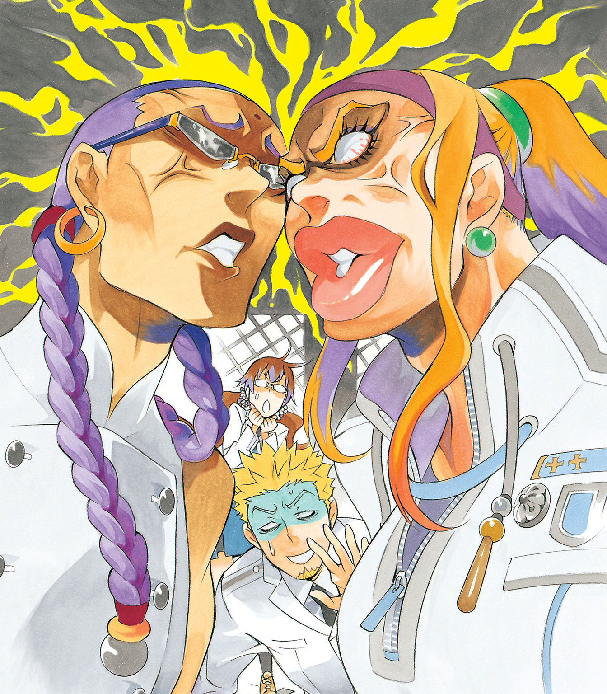

| D.Gray-man reverse 3 Lost Fragment of Snow | |
| 星野桂 & 城崎火也 | |
この本は縦書きでレイアウトされています。
また、ご覧になる機種により、表示の差が認められることがあります。

この作品はフィクションです。実在の人物・団体・事件などには、いっさい関係ありません。
「ええっ！ バク支部長、本部に行くんですか!?」
蝋花は思わず声を上げた。
興奮のあまり三つ編みが揺れ、眼鏡がずり落ちそうになる。
白衣を着た科学班の一員とはいえ、まだまだ少女の蝋花である。
「ああ。ルベリエ長官に呼ばれてな。ちょうどコムイに渡したい資料もあるし」
バク・チャン――若きアジア支部長――は、きりっと帽子を整えた。
なにやら張り切っているらしい。
「あ、あああああの、私も！ 私も行っていいですか!?」
蝋花は思わず声を上げた。
「は？」
バクが怪訝そうに見返す。
そんな視線をものともせず、蝋花はずいっとバクに迫った。
新しく移転したばかりの本部――そこには、いる。
あの人が。
「私、移転した新本部をいろいろ見ておきたくて！ 本部に異動したジジ先輩に、科学班の正式な一員になったことも報告したいですし......」
バクはしばらく蝋花を見ていたが、やがて頷いた。
「そうだな、おまえも見習いから正式な班員になったことだし、これから連携をとることもあるだろうからな」
蝋花は大きな黒い目をこぼれんばかりに見開いて、バクの一言を待った。
「まあ、よかろう」
「やった―――――――!!」
蝋花は両手を上げ、その場で跳ね飛んだ。
会えるんだ。
私、ウォーカーさんに会える！
＊
アレン・ウォーカー。
彼に会ったのは、私がアジア支部科学班の見習いとして、一人前になれるよう奮闘中だったときだ。
彼は重傷を負っていて、アジア支部が面倒をみていた。
まだ十五歳のエクソシスト――それしか知らなくて。
神の使徒とはいえ、そんな子どもが戦争の最前線にいるなんてひどいなあ。
そんなことを思いつつ、彼に興味津々だった。
入団したばかりの私たち――同期の李佳とシィフ――はイノセンスをちゃんと見たことがなかったし、粒子化した寄生型イノセンスを復活させるなんて絶対に見逃せないと思って駆けつけた。
「少年エクソシストはどこですかぁ～？」
そんなことを言ったと思う。
バク支部長の隣にいたウォーカーさんは、きょとんと私を見て――それから微笑んだんだ。
彼は傷だらけで、左腕を失っていたのに。
「はじめまして」
純白の雪を思わせる真っ白い髪。
十五歳らしからぬ、大人びた、優しい笑み。心地いいトーンの声。
彼の挨拶に、私は声もなかった。
心を撃ち抜かれるってこういうことなんだ。
胸の奥から、数え切れないほどの花がふわっと咲き誇るのがわかった。
顔が赤く染まり、彼の顔がまともに見られない。
一言で言ってしまえば、ウォーカーさんは私の好みのど真ん中。
まさか、こんな気持ちになるなんて......。
不意打ちを喰らって、私はただぼうっとウォーカーさんを見つめていたっけ。
李佳とシィフが呆れたように見てた気もするけど、私はそれどころじゃなかった。
＊
久しぶりにウォーカーさんに会える！
蝋花は自分の部屋に戻ると、編んでいた髪をほどいた。
波打つ長い黒髪を丁寧にとかす。
そして今度は、子どもっぽい三つ編みではなく、髪を二つにわけて束ねた。
蝋花は引き出しから、買っておいた白い花の髪飾りをそっと取り出した。
どうしよう。この前買ってみたけど。
ちょ、ちょっと派手かな......。
でも、いいよね。これくらい。
束ねた髪に白い花。白衣を着てるから、そんなに変じゃない......はず。
ウォーカーさんに会ってから、自分の外見が気になるようになっていた。
眼鏡だって、縁なしに替えてみたし......。
どうかな。
彼は少しでも、私を意識してくれるんだろうか。
可愛いって――思ってくれるだろうか。
蝋花はじっと鏡を覗き込んだ。
大きな黒い瞳がじっと自分を見返してくる。
好きな人に会える。その期待で輝く瞳は、紛れもなく恋する者のそれだった。
「蝋花！ 行くぞ！」
「はいっ！ 今行きます！」
バクの声に、蝋花は慌てて部屋を飛び出した。
＊
「うわあ......」
新本部に着いた蝋花は思わず声を上げ、四方八方を見回した。
天にまで届きそうな高い天井に広々とした空間。
「立派ですねえ......」
外から見たときも思ったが、歴史を感じさせる荘厳な建物だ。
吹き抜けのホールをぐるりと囲む、ヨーロッパ風の尖塔アーチ。
優雅でいて、でも落ち着きのある雰囲気に吞まれそうだ。
「元は古い教会と修道院だったらしい。広いから迷うなよ」
「は、はい......あ......団服、新しくなったんですね」
行き交う本部の団員たちが、きりりとして見える。
漆黒のベースに赤いラインが印象的な服だ。
以前より体にぴたりと沿う――どこか緊張感のあるデザイン。
旧教団本部を崩壊させた、レベル４の襲撃。あの激しい戦いがあったから、余計にそう見えるのだろうか。
蝋花は自分が周囲から浮いているように感じ、慌てて髪を整えた。
しっかりしなくちゃ。私だって科学班の一員なんだから！
そんな蝋花にバクが視線を向けた。
「さて、俺様は長官とコムイに会ってくる。おまえはその間、見学でもしていろ。邪魔にならんようにな」
「はいっ！」
蝋花はしゃきっと背筋を伸ばした。
「そうだな、一時間後にまたここに戻ってこい」
「わかりました！」
元気よく答えながら、蝋花は思いを巡らせていた。
――一時間。
一時間もあれば、ウォーカーさんとゆっくり話せるかも......。
それに、もしかしたら、夢にまで見たウォーカーさんとの『愛の本部生活』の第一歩になるかも！
もし、本部に異動になったら、科学班の一員としてウォーカーさんのために研究して、戦いに疲れた彼を癒してあげるんだ。そう、一緒にご飯を食べたりもできる！ 任務のないときは、一緒にゲームしたりして、どんどん仲良くなって、『蝋花』、『アレン』って呼び合う仲になったりして......そして付き合うなんてことになったら、キ、キス......とか。
蝋花は、か―――――っと顔に血が上るのを感じた。
「蝋花？」
怪訝そうなバクの声に、蝋花はハッと我に返った。
「わ、わわ！」
妄想してる場合じゃない！
せっかく、ウォーカーさんに会えるチャンスなのに。
まずは彼を見つけなきゃ！
蝋花は今にも走り出したい気分になった。
「では、本部の方々に挨拶回りをしてきますっ！」
「そ、そうか......」
蝋花の気合いの入った顔に、バクがちょっと驚いたように半歩下がった。
「気合いが入ってるな。くれぐれも粗相のないようにな」
「はいっ！」
バクが背を向けた途端、蝋花は走り出した。
ウォーカーさんを探さなきゃ！ 一時間しかないんだから！
でも、どこにいるんだろう。
尖塔アーチをくぐり、廊下を走りながら、蝋花はきょろきょろ辺りを見回した。
広い新本部がまるで迷宮のように感じられる。
行き交うのは知らない人ばかり。
本当に広くて、そのうえ、人が多い。
どうしよう......。
焦りが募ったそのとき、目の前に白衣の集団が立ちはだかった。
楽しそうにわいわいやっている。
白衣を着ているということは――。
「科学班の人たちだ！」
男性たちの中心にいるのは、明るい色の髪をポニーテールにした可愛らしい一人の女性。
「あっ、あの......アレン・ウォーカーさんがどこにいるのか知りませんか？」
そう尋ねようとした瞬間、後ろからドンとぶつかられ、蝋花はよろけた。
かけていた眼鏡が落ちる。
「ああっ、眼鏡がっ！」
「なんだよ、ねえちゃん、トロくせぇな。ほら」
拾ってくれた眼鏡をかけると、額に透き通った淡いエメラルドのような玉のついた男の子がこちらを呆れ顔で見ていた。
年の頃は十歳くらいだろうか。なんで、こんな子どもが......。それに額の綺麗な玉、あれって埋め込まれているように見える。
戸惑いながら、蝋花は男の子を見つめた。
「あ、ありがと......」
「ああっ、エミリアがいないと思ったら！」
男の子がむうっとしたように、頰をふくらませた。
その視線の先には、科学班の男性陣に取り囲まれている女性。
あの女性、エミリアさんっていうのか。
男の子は彼女がちやほやされているのが気に入らないらしい。
「なんだよ、エミリアのやつも楽しそうにさあ......」
「あ、あの......」
蝋花はおそるおそる声をかけてみた。
だが、先に訊かれてしまった。
「ところで、ねえちゃん誰？」
「え？ えっと、アジア支部科学班の蝋花っていいます」
「ふーん、俺はティモシー」
じろじろと珍しげに見つめる視線に苦笑しながら、
「よろしくね、ティモシーくん」
と蝋花が言った途端、ティモシーは顔色を変えた。
「あっ、あいつ、エミリアの肩に手を置きやがって！」
ティモシーの視線の先には、談笑しているエミリアがいた。
傍らの男性がエミリアの肩に親しげに手を置いている。
むうっとふくれるティモシーが可愛くて、蝋花はつい微笑んでしまった。
「あはは、可愛い～。キミ、エミリアさんが好きなのね」
「え？」
蝋花の言葉に、ティモシーの顔が真っ赤に染まった。
「べ、別に！」
ぷい、とティモシーが横を向いた。
だが、わかる。
いくら視線をそらそうとも。
彼の意識が常にエミリアに向けられているのが。
気になって気になってしかたがないのだろう。
蝋花はくすっと笑った。
年上のお姉さんに憧れる年頃なのよね。
でも、見てるだけじゃダメなんだよ？
ちゃんと行動しないと。
私みたいに、好きな人の好物をリサーチして差し入れしたり......。
といっても、まだ子ども。
恋に恋してるのね。勝手に相手のイメージをふくらませたりして......。
「......なにニヤニヤ笑ってるんだよ」
ティモシーの声に、蝋花はハッとした。
「ううん、なんでもない！ ところで、その額の綺麗な玉はなあに？」
見れば見るほど、不思議な玉だった。水晶のように透き通っていて、それでいて緑がかっている。
「これはイノセンス！ これでもエクソシストなんだぜ！ なめんなよ！」
ティモシーが胸を張って言ってきた。
「ええっ」
蝋花は思わずまじまじとティモシーを見つめた。
こんなに小さいのに、エクソシストなの？
この子もＡＫＵＭＡと戦うっていうの？
――そう、エクソシスト！
蝋花は自分の目的を思い出した。
「あの、エクソシストのアレン・ウォーカーさんを探してるんだけど知らない？」
「アレン？ あいつなら食堂じゃねえの。大食らいだから」
「あ、ありがとう」
確かにウォーカーさんはあんなに華奢なのにすごい大食漢。
でも、けっこう味にはこだわりがあるみたい......。だから、みたらし団子、とっておきのを作ったんだ。
何度も作って、アジア支部のみんなにも試食してもらって。
そのとき、堪忍袋の緒が切れたのか、ティモシーがエミリアのほうに向かって走っていった。
「おまえらいい加減にしろー！ エミリアは俺の専属家庭教師なんだぞ！」
そんなティモシーの小さな背中を見送って、蝋花は走り出した。
食堂に行ってみよう！
＊
広く長い廊下には縦長の採光用高窓がずらりと並び、どこまでも続いているかに思えた。
日が射す明るい廊下を歩きながら、蝋花はそっと思い描いた。
食堂かあ......。
本部勤務になったら、一緒に食事とかできるんだよね。
それに、それに、仲良くなったら、「おいしそうだね、それ。蝋花、食べさせてよ」「いいわよ、はい、あ―――ん」みたいなことになったりして！
考えるだけで頰が赤くなってくる。
楽しそう 。
。
もし、ウォーカーさんがいたら......勇気を出してやってみようかな。
「はい、どうぞ」って......。
「あ！」
蝋花は妄想に夢中で、危うく食堂を通り過ぎるところだった。
いけない！
蝋花は慌てて食堂のドアを開けた。
ん？
食堂を覗いた途端、激しい言い争いの声が耳に入る。
なんだろう。
蝋花はドキドキしながら食堂に足を踏み入れた。
「はい、あ―――ん！ ほら！」
甘ったるい声がやけに野太い......。
蝋花は悲鳴を上げそうになった。
皆が注目しているなかで、男（？）と男（？）の争いが繰り広げられていたのだ。
あれって女性っぽいけど......男性同士よね？
「だーかーら！ こういうときはスタミナがつくものって決まってんのよ！ レバニラ炒め！」
ドン！ とテーブルに皿を置いたのは、筋肉質の体に分厚い唇が印象的な大柄な女性――、いや、男性だ。
外見だけでなく、性格も押しが強そうだ。
あまりの迫力に、蝋花はびくっと飛び上がった。
そんな彼女、いや、彼を真っ向から睨みつけているのは、サングラスをかけた細身で長身の男性。
額にはビンディらしき印、オールバックの髪は長く二つに束ねられている。
彼も負けじと声を張り上げる。
「なに言ってるのよ、徹夜明けのつらいときにそんなものが入るわけないでしょ！ こういうときはおかゆよ、おかゆ！ これだから素人さんは......」
サングラスの男性がはあっとため息をついた。
彼も仕草や言動が女性っぽい。やはり男性同士の争いというよりは、女の戦いに見える。
「あんたねえ、アタシはこれまでずっと教団のみんなのご飯を作ってきてるのよ！ 新入りが口を出さないで！ それにここはアタシの職場なのよ！ ずかずか入ってきて図々しいったら！」
すると、大柄な男性がぐっと腕を組んで、サングラスの男性を見返した。
「私は愛しいリーバー班長のためにここに来たのよ！ これからは私が彼の面倒を見るから、あんたはお役ご免ってとこね。今までご苦労様！」
「あんた、探索部隊でしょ！ なに言ってるのよ！ みんなの食事の面倒を見るのはアタシの仕事なの！ つまり、リーバーの面倒もアタシが見るの！」
リ、リーバーさん？
というと、本部科学班の班長......。
よく見れば、二人の間でぐったりしているリーバーがいた。
「あ、あの、これは何が起こってるんですか？」
蝋花はこそっと近くの団員に訊いてみた。
「リーバー班長を巡る戦いってとこかな......唇の分厚い大柄なほうがボネールっていって、最近、探索部隊に入ったやつ。で、サングラスで細身のほうがウチの料理長でジェリー」
「そ、そうなんですか......」
間にはさまれてぐったりしているリーバーが顔を上げた。
「あの、オレ、食欲ないんだけど......」
「んまあ！ ダメよ、何か食べなきゃ！」
ずいっとボネールが体を寄せると、まけじとジェリーが手を伸ばしてきた。
「そうよ、体がもたないわよ。アタシが食べさせてあげる！ はい、あ――――ん！」
両側から食事が突き出され、リーバーの口に無理矢理詰め込まれる。
「う......うぐ......」
バタリ、とリーバーが倒れた。
「きゃああああ、大変！ 救護室に連れていくわ！」
ボネールが問答無用でリーバーを抱きかかえると、食堂を飛び出していった。
蝋花は呆然とそれを見送った。
......「はい、あ――――ん」計画......。
食べさせてあげるって想像以上に大変なのかも。
蝋花はだだっ広い食堂内を見回した。
綺麗なタイル張りの床に、長テーブルと長椅子がずらりと並べられている。
スペースに余裕があるのか、ゆったりした造りだ。
ここならくつろいで食事ができるだろう。
だが、今の蝋花はくつろぐ気分ではなかった。
蝋花は小走りになりながら、一つ一つのテーブルを見ていった。
ウォーカーさん、いない......。
蝋花は勇気を振り絞り、料理長のジェリーに近づいた。
「なあに、あんた」
「あ、あの、ウォーカーさんはこちらにいらっしゃいませんか？」
「ああ、あのコならとっくにご飯を食べて出ていったけど？」
ジェリーの指差す方向には、信じられない量の皿が山のように積まれていた。
ああ、ウォーカーさん、相変わらず......。
それより、もう食べて出ていっちゃったのね。
蝋花はがっくりと肩を落とした。
「あ、ありがとうございました......」
しょんぼりしながら食堂を出ようとした蝋花の背に、ジェリーの声がかけられた。
「そこのドアから出ていったから、アレンなら地下の研究区じゃないかしら？ 科学班の子たちと仲がいいし」
「こっちのドアですね。あ、ありがとうございます......！」
思わぬ情報をもらい、蝋花は頰を緩めた。
研究区かあ......。
一緒に食事は無理だったけど、そこで食後のコーヒーでもいいかも！
楽しく語らえそう......。
研究区に急がなきゃ！
地下への階段を目指し、廊下を必死で走っていると、向こうから、すらりとした少女が歩いてきた。
あれは――。
「リナリーちゃん！」
声をかけると、リナリーがにっこり微笑みかけてきた。
「あら、あなたアジア支部の......たしか蝋花さん」
リナリー・リー。すごい美少女で、しかもエクソシストだ。
艶めいた黒い髪、輝く黒い瞳。
同じ女性である自分でもドキドキしてしまう。
「どうしたの、そんなに急いで。もしかして迷子？」
「あの、研究区に行きたくって......」
蝋花がそう言ったとき、頭の上から声が降ってきた。
「やあ、リナリー・リー」
「あ、ペック班長」
眼鏡をかけ、カチューシャで髪をオールバックにしている男性が声をかけてきた。
白衣を着ているので、科学班だろう。
「時間があいたんでね。きみとコーヒーでも飲もうかと思って」
そのとき、ペックがようやく気づいたように蝋花に目をやった。
「おや、きみは？」
「アジア支部科学班の蝋花です」
蝋花はぺこりと頭を下げた。
「へえ、僕は科学班、第二班、班長のレゴリー・ペック」
「よろしくお願いします」
そう言いながら、蝋花は胸がもやもやするのを感じた。
なんだろう、この人、なんだかとっても偉そう。
それに......。
ペック班長の目線がリナリーの足へ向けられているのも気になる。
やだ、この人、いやらしい......。
「リナリー・リー、お話があるので談話室へ行きましょう。あそこなら邪魔が入らないですし」
「あ、あの......私......」
リナリーが困ったように視線をそらした。
ペックが強引に、その細い肩を抱こうとしたとき――。
「ボクの妹に何か用事でもあるんですかね、ペック班長」
リナリーの前にずいっと現れたのは長身の男性。
その存在感は圧倒的だ。
蝋花は息を吞んだ。
コムイ室長だ！
キラリとコムイの眼鏡が光る。
ペックが舌打ちでもしたそうな顔でコムイを見る。
「......エクソシストと交流を図ろうと思ってね。僕は中央庁から来たばかりでしょう？」
「まずは同じ科学班と交流するのが筋だと思いますけどね」
「筋ねえ......」
ペックが唇をゆがめた。
「ずいぶん、勝手な行動を取っているらしいとか？ 補佐官のブリジット・フェイも苦労していると聞いてますよ」
「ここで問題なのは私の行動ではなく、あなたの言動でしょう。親しくない女性を無理に誘うというのは中央庁のやり方なんですかね」
「前から思っていたが、室長殿の妹への執着は問題があると思いますよ。公私混同という言葉を知っていますか？」
ペックがガッとリナリーの肩をつかんだ。
ぶち。
蝋花はコムイの中の何かが切れる音が聞こえた気がした。
コムイの顔から一切の表情が消える。
そして、コムイはおもむろにポケットからリモコンを取り出した。
「フフフフ......」
コムイの眼鏡がきら―――んと光る。何かを企んでいるようだ。
「......リナリーを誘うというのなら、まずはコムリンを倒してもらってからにしましょう！」
「......コムリン？」
蝋花とペックは同時に首を傾げた。
「に、兄さん！」
リナリーが青ざめる。
ずし―――――ん。ずし―――――ん。
不穏な音が近づいてくる。
そして、
「きゃあああああ！」
蝋花は廊下の果てから、六本足で走ってくる巨大なロボットに声を上げた。
ロボットの額には、『Ｋ』の文字。
「な、なんだ、このセンスの悪いロボットは―――――！」
ペックが絶叫する。
「さあ、行け、コムリン！ 今こそ、その力を見せるとき！」
コムリンがガション、ガション、と力強い足音を立てながら、ペックに迫る。
一足ごとに、ぶつかった壁が削れ、窓ガラスが割れ、床が破壊されていく。
人など、近くにいるだけで、吹き飛ばされてしまうだろう。
コムイが、さっとリナリーと蝋花の腕を引き、ペックから離れる。
そして、再びリモコンを操作し始めた。
「うわあああああ!!」
逃げるペックをコムリンが執拗に追う。
「コムリンから逃げられると思うな！」
コムイがにやりと笑ったとき、
「室長」
涼しげでいて、凜とした声がした。
コムイが笑みを消し、びくっと後ろを振り返る。
そこにいたのは、茶色の巻き髪をボブカットにした大人の女性。
タイトスカートとヒールが似合う、いかにも有能な感じの人だ。
「フェ、フェイ補佐官......」
あのコムイが怯えたように彼女を見る。
「何事ですの、これは！」
フェイはじろりと廊下の惨状を見回す。
「い、いやこれはですね......」
「バク・チャン支部長との会合のお時間ですよ！ 書類仕事から逃亡されたかと思ったら、こんなところで何をされてるんです！ この後は三十四分後に会議がありますし、二百五十八枚の書類に目を通していただきますから」
立て板に水とまくしたてたフェイが、うんざりしたようにコムリンの爪痕を見つめた。
「もう本当に目が離せないんですから！ ......被害額は少なく見積もっても......というより、早くあのロボットを――」
言いかけたフェイが絶句した。
ペックがこちらに向かって逃げてきたのだ。そして、もちろん、その背後には廊下を破壊しながらペックに迫るコムリンの姿があった。
「きゃあああああ!!」
「わああああああ!!」
ぐわっとコムリンの足が上げられ、鋭い一撃がペックを狙う。
「うわあ！」
ペックが横っ飛びし、間一髪で逃れた。
コムリンの足は空振りし、廊下に激しく突き刺さると、その衝撃が皆を襲った。
「あっ！」
「リナリーちゃん！」
衝撃でリナリーがよろけた。蝋花は手を伸ばしたが、つかみ切れなかった。
――リナリーちゃんが！
「おっと、危ないさぁ♪」
いつの間に現れたのか、倒れかけたリナリーを背後から支えているのは、赤い髪の少年――エクソシストのラビだった。
頭にはバンダナ、右目には眼帯といういつもの姿。
「あーあ、コムイもしょうがないさ。お、アジア支部の人？」
ラビがにこっと蝋花に微笑みかけた。
思わず見とれるような、人懐っこい笑みだった。
「いつものことだし、あの二人は勝手にやらせておくさ」
そう言うと、ラビが蝋花とリナリーの肩を抱いた。
い、いつものこと？ この大騒ぎが？
......本部勤務って想像以上にハードなのかも。
さっきの食堂での騒ぎもすごかったし......。
だが、蝋花は自分を奮い立たせた。
でも、ウォーカーさんと一緒にいられるんなら！
さっさとその場を退散するラビに、
「あっ、ラビ！」
「ブックマンJr！」
というコムイとペックの怒りの声が投げかけられたが、当の本人は気にする様子もなく二人に向けて明るく舌を出した。
「ま、暴れるだけ暴れたら、すっきりするだろ」
蝋花はドキドキしながら、ラビを見上げた。
ラビさん......。
エクソシストでブックマンという稀有な存在。
この人には研究対象として興味があるけど......今はそれどころじゃない！
「あのっ、私、研究区に行かなくちゃいけないので、これで失礼します！」
蝋花はぺこりと頭を下げた。
研究区に行ったら――きっとウォーカーさんがいて――。
私を見たら、どう反応するんだろう。
きっと驚くよね。そして「蝋花さん！」って両手を広げてくれたりして。
そしたら、ああ、どうしよう！
そこに飛び込んじゃいそう！
蝋花はまた、妄想にかまけすぎていたことに気づいた。
ああ、もうどんどん時間が過ぎていく。
急がなくちゃ！
走り出そうとしたとき、蝋花はぎくっとして足を止めた。
「あ、あれは......」
美しい装飾が施されたがっしりした廊下の柱。
その柱の陰にバクがいたのだ。
な、なんであんなところにいるの？ しかも手にはカメラがある。
彼の視線の先には、ラビと仲良く話しているリナリー。
......バク支部長がリナリーちゃんに片思いをしていて、しかも盗撮癖があるって本当だったんだ......。
長官との話は終わったみたいだから、コムイ室長と会うまでの時間を使ってリナリーちゃんに......。
蝋花はふるふると首を振った。
今は見なかったことにしておこう。下手に話しかけてもう帰ろうって言われたら大変だもの！
蝋花は時計を見た。
あと三十分しかない！
蝋花は走り出した。
＊
ようやく地下に続く階段を見つけた。
「け、けっこう深いのね」
華麗なカーブを描く階段が続く。
うす暗いので、転がり落ちないように気をつけながら、蝋花は階段を下りていった。
「はあっ......はあ......」
やっと研究区にたどりついた蝋花はなんとか息を整えた。
「うわあ......」
目の前の広々とした空間に、たくさんの白衣姿の研究員たちがいた。
大広間はぐるりと本棚に囲まれており、ちょっとした図書館よりはるかに豊富な蔵書がとりそろえられていそうだ。
蝋花はざわめいている大広間に、おそるおそる足を踏み入れた。活気に満ちあふれていて、圧倒されてしまいそうだ。
「すごい......こんなにたくさんの人たちがいるんだ......」
大広間はパーテーションで区切られている。ところどころで「わあ！」という叫び声がしたり、なにやら正体不明の煙が上がったり、賑やかなことこのうえない。
蝋花はドキドキしながら、仕切りを覗いていった。
あこがれの本部勤務になったら、私もここで働くのかあ。
大変そうだけど、ウォーカーさんと一緒と思えば頑張れる！
ウォーカーさん、この仕切りのどこにいるのかなあ。
手を広げて自分を迎えてくれるアレンを想像し、蝋花は頰を赤らめた。
「あ、あの、お邪魔します......」
期待いっぱいに仕切りを覗いた蝋花は、思わず飛び上がりそうになった。
確かに両手を広げていた。
――縛られた神田ユウが。
な、何これ......。
想像だにしなかった光景に、蝋花は声も出なかった。
ゆったりしたスペースには、科学班第一班のジジ、ロブ、そしてブックマンとエクソシストの神田ユウの四人。
な、何、この異様な雰囲気......。それになんで縛られてるの......。
「お、蝋花じゃねえか！」
ジジが蝋花を見て相好を崩す。ジジはアジア支部にいたのだが、新本部ができてから異動になったのだ。
懐かしい。懐かしいんだけど。
――手を広げていたのはウォーカーさんじゃなくて、神田さん。
――声をかけてくれたのはウォーカーさんじゃなくてジジ先輩......。
蝋花の夢がガラガラと音を立てて崩れていく。
「な、何してるんですか？」
神田ユウは今にもブチ切れそうな顔で周りを睨んでいる。
そんな神田に臆することなく、ロブが神田の長い黒髪に触れる。
「色は黒、髪質やわらかめ、直毛、細い、量は普通......と」
「てめぇら、何の真似だ......」
神田がドスのきいた声で訊く。
「いやー、ブックマンさんから頼まれてさー。神田くんみたいな髪になりたいんだって」
そばにいたブックマンがぽっと頰を染める。
「気持ち悪ぃんだよ！」
神田が怒鳴り散らすが、誰も気に止める様子はない。
「まあ、まあ、協力してよ！」
ロブが人当たりのいい笑顔で、神田をなだめる。
「そういうわけで、神田のような髪が生える育毛剤を開発しようと思ってな。こうして協力してもらってるんだ」
「無理矢理だろうが！」
「天そばにつられるなんて、神田も可愛いところがあるなあ」
ロブがくすっと笑いながら言う。
「ちっ......。だいたい、ムダだ。あの頭皮はもう枯れている......」
「なにをう！」
ぼそっと言った神田の言葉を聞き逃さず、ブックマンがパンダパンチを繰り出す。
「ところで、蝋花、本部に何か用なのか？」
ジジに尋ねられ、蝋花はハッとした。
「あ、私はウォーカーさんを探していて......」
「おうおうおう、アレンねえ」
ジジがニヤニヤ笑って蝋花を見る。
「わざわざアレンに会いに来たのか？」
「えっ、あの......」
「またまた、みたらし団子の差し入れか？」
ジジがからかうように言い、蝋花は真っ赤になった。
「ち、違いますっ......わ、私、正式な科学班の一員になったので、ご挨拶しようと思って......」
「あやつ、もてるのう......」
ブックマンがぽつりと言う。
「えっ？」
聞き捨てならない言葉に、蝋花はハッとした。
「ど、どういうことですか？」
蝋花は思わずブックマンに詰め寄った。
「ここだけの話じゃがの、ノアの少女にキッスされたらしいんじゃよ。それもクチビルに。ラビから聞いたんじゃがの」
「キ、キス......!?」
信じられない言葉に、頭がガンガンする。
ウォーカーさんが女の子とキス。しかも唇になんて......。
足ががくがく震え、蝋花はよろめいた。
なんで？ ウォーカーさんはその女の子のことが好きなの？
私の知らないところで何があったんだろう。
女の子とキスって......女の子と......女の子と......。
「......ノアの一族の少女があんなに懐くとはな。あれでは確かに誤解を招きかねない......」
ブックマンが真剣な面持ちでつぶやいたが、愕然としている蝋花の耳には入らなかった。
「キスなあ。まあ、そんなにショックを受けるな蝋花。ファーストキスなんて、大抵事故みたいなもんだ」
ジジが神田を見る。
「神田の初チューも俺だしな」
「はあ!? やめろ、言うなよ！」
神田が声を上げたが、ロブが「そうそう」と頷いた。
「あのときはジジがすごく酔っぱらっててさ。ハイになってたんだよな。それでちょうど通りがかった神田を抱き寄せてチューしたんだ」
「まあ、男同士のキスはカウントされないから、気にすることないって！」
ジジがゲラゲラと笑う。
「う......」
神田がブルブルと震え出した。
「そうそう、あれは神田が十三歳くらいのときだっけ――」
「貴様ら......」
煉獄から這い上がってきた亡者のような、底冷えのする声が、神田の口からもれた。
その黒い目に、激烈な怒りをたたえて。
「か、神田......」
凍りつくジジたち。
神田がぶちいっと縄を力任せに引きちぎった。
「う、うわあ！」
ゆらりと立ち上がった神田から、目には見えないが凄まじい怒りのオーラが立ち上っている。
触れるだけで切れそうだ。
「か、神田？ お、落ち着け......な？」
なだめるように言うロブを無視し、神田が何の躊躇もなく六幻をすらりと抜いた。
「......それ以上言ってみろ。死ぬ覚悟はできてるんだろうな？」
「お、落ち着けってば！」
ジジたちの言葉は神田に届いていないようだ。
神田がめちゃめちゃに六幻を振り回す。
「う、うわ――――!!」
「きゃあああ!!」
蝋花は頭を抱え、仕切りを飛び出した。
背後から、ブックマンの「ワシの育毛剤――――!!」という悲しげな叫びが聞こえてきたが、振り向かなかった。
＊
ぐすっ、ぐすっ。
蝋花は眼鏡を外し、ぐいっと白衣の袖で涙をぬぐった。
ウォーカーさんがいないばかりか、ショックなことまで聞かされて......。
なんだか、もう立ち直れないよ。
勇気を出して本部まで来たのに......。
キスとか、キスとか、キスとか......。
夢なら覚めてほしい！
もうあのことは忘れよう！
ウォーカーさんは研究区の別の場所にいるはず。
きっと彼の顔を見たら、嫌なことは忘れられる！
大広間の隅に移動した蝋花はぎくっとした。
なにやら二人の男性が話し込んでいる。
蝋花はそっと足を進めた。
変な人たちじゃありませんように。
もう妙な事件に巻き込まれたくない。
『あ―――ん』事件に、『コムリン事件』に、『はりつけ事件』......悪夢のような出来事が次々と蘇ってくる。
本部っていつもこんな感じなのかな......。
蝋花は話している二人をそっと横目で見た。
「あ......」
会ったことはないけど、ファイルで見たことがある。
エクソシストのマリさんとチャオジーさんだ。
マリは大きな体に、優しい目をしている。
チャオジーはツンツン髪をヘアバンドでとめた、そばかすの青年。
なにやら話し込んでいた二人だが、マリがハッとしたように顔を背後に向けた。
「ミランダの声がする......」
「え？」
「書庫だな。どうやら、本棚が崩れてきて動けないようだ。助けに行ってくる」
「そんな声、聞こえるんスか？ マリさんの聴覚って常人の何倍もあるんですね......」
チャオジーが驚いている。大広間はざわめいていて、誰が誰の声だか判別がつかない。
チャオジーが意を決したようにマリを見上げた。
「......よく助けに行ってますよね、ミランダさんのこと」
「だから？」
二人はしばし見つめ合った。
「......こんなにたくさん団員がいるのに、ミランダさんの声は決して逃さないっていうか......」
言いかけたチャオジーが目をそらした。
その様子に何かを感じ取ったのか、マリの顔がほんのり赤く染まった。
「......とにかく、行ってくる」
マリがくるりと背中を向けた。
マリを見送っていたチャオジーが、立ち尽くしている蝋花に気がついた。
蝋花は急いで頭を下げた。
「見慣れない子だなー。科学班？」
同じアジア系だからか、チャオジーが興味深げに見てくる。
「アジア支部の蝋花といいます」
「大丈夫？ その顔......泣いてたみたいだけど......何かあったの？」
「え、あの......」
蝋花はぐっと詰まった。
キスの話、本当だろうか。
そのことを思うだけで、胸が切り裂かれたような気がする。
だけど、やっぱり会いたい。ウォーカーさんに！
「アレン・ウォーカーさんがどこにいるか知ってますか？」
「アレン・ウォーカー？」
空気が凍った。
さっきまで好意的だったチャオジーの顔が、その名を聞いた途端に固まった。
じっと探るように蝋花を見る。
な、何だろう？
私、なんか変なこと言っちゃった？
だが、チャオジーは何も言わず、すっと目をそらした。
「......みんなと遊戯室に行ったんじゃないかな。チェスの試合があるって。この先にある八番目のドアだよ」
「！ ありがとうございます！」
蝋花は自分を力づけるように自らの手をぎゅっと握りしめた。
今度こそ会うんだ。会えるはず、きっと。
ウォーカーさんに！
そうじゃなければ、何も始まらない！
＊
『遊戯室』との札がさげられたドアの前はしんとしていた。
蝋花は小さくノックすると、そっとドアを開けた。
「わあ......」
研究区にあるとは思えない、優美な装飾の施された部屋だ。床には華やかな模様の絨毯が敷かれている。
そんななか、緊迫した空気が伝わってきた。
眼鏡をかけた小柄な青年と、体格のいいドレッドヘアの女性がチェスの盤を中心に向かい合っている。
青年のほうは知っている。科学班のジョニーだ。
見守っている人たちがざわめきはじめ、蝋花はそっと近づいてみた。
「おい......これって......」
「ああ、ジョニーの王座がキャッシュに奪われるぞ......」
え？
蝋花はチェスの盤を見た。戦況がどうなのか自分にはわからないが、キャッシュと呼ばれた女性が優勢らしい。
「チェックメイト」
静かにキャッシュが駒を置いた。
ジョニーががくりと頭を下げる。
見守っていた人々がわっと歓声を上げた。
「キャッシュが勝った！」
「すげえ！」
「キャッシュが新王座だ！」
勝敗に沸く人々とは対照的に、キャッシュはさも当然というように立ち上がった。
女王然としたキャッシュを、ジョニーが見上げた。
ジョニーの頰はほんのり上気し、眼鏡の奥の目が輝いている。
負けた悔しさよりも、相手に対する尊敬の念が勝っているのだろう。
キャッシュはそんなジョニーに目をやると、
「私とやるにはちょっと早かったね」
そう言い残し、振り向きもせずさっさとその場を立ち去った。
「ク、クール......」
周囲の人たちは、ただただ見送るばかりだ。
蝋花は観衆を見回したが、その中にアレンはいなかった。
「はあ......」
ようやく会えるかと思ったのに。
負けたジョニーは完璧に打ち負かされた感動のまま、呆然とチェス盤を見つめている。
ジョニーに何か言葉をかけたかったが、蝋花は時間がないことに気づいた。
周囲を見回し、蝋花は尋ねてみた。
「あ、あの、ウォーカーさんいませんか？」
「あれ、あいつ、いなかったっけ？」
「最初はいたよな？」
蝋花はがくりと肩を落とした。
こんなに探しているのに、会えないなんて......。
しょんぼりと遊戯室を出ようとする蝋花に、ジョニーが声をかけてきた。どうやら正気を取り戻したようだ。
「きみ、みたらし団子を差し入れしてきた子だろ？」
「え、ええ」
「会えたら話しておきたいことがあったんだ。アレンのことで」
蝋花は驚いてジョニーを見つめた。
ジョニーは立ち上がり、蝋花のそばに寄ると、そっと声をひそめた。
「あいつ、今、複雑な立場だろ？ 中央庁から監視されてるし、仲間からもノアの手先なんじゃないかって疑われてるし」
ずきん、と胸が痛む。
――ノアの少女とキス。
そのことに傷ついたけれど、事態はもっと複雑だったのかもしれない。
ノアの手先なんて言われてるなんて。
あ、もしかしてさっきのチャオジーって人も、それで複雑な表情になったの？
「アレンは笑ってるけどさ、大丈夫だ、って。でも――つらいと思うんだ、本当は。オレたちが考えているより、ずっと」
蝋花は思い出す。アレンの笑顔を。
屈託のない、爽やかな笑顔。
でも、その下で、一体どれだけの傷を抱えていたんだろう。
どれほどつらい思いを押し殺し、笑っていたんだろう。
「私、恥ずかしい......。ウォーカーさんに会えるって、はしゃいで......」
「違うよ！ キミのそのまっすぐで素直な思いは、今のアレンにとって貴重だと思う。救いになるよ、きっと」
そうなのだろうか。
それなら。
少しでも彼の力になれるのなら、嬉しいのだけれど。
「ありがとうございました」
蝋花はぺこりと頭を下げて遊戯室を出た。
残り時間はあと十分。
もう、無理ね。
そういう運命なんだ、きっと。
私には手の届かない人――。
心の奥ではわかってたんだ。会えないって。
バク支部長を待たせるわけにはいかない。
研究区を出て戻ろう。
＊
階段を上がった蝋花は、人気のない廊下をとぼとぼと歩いていた。
今までの嵐のような出来事が信じられない静けさ。
廊下に飾ってある鏡が目に入る。
泣いたせいで、目がはれぼったい。整えたはずの髪はくしゃくしゃ。髪飾りは曲がってしまっている。
薔薇をあしらった優美な額縁の鏡の中の自分があまりに惨めで、また泣きたくなる。
でも、私――。
「あなたがずっと好きだったんです！」
思いがけない女性の声が聞こえ、蝋花は開いているドアの中を覗いた。
中は本棚が壁を覆い、ずらりと蔵書が並べられている。
中央にはゆったりとした椅子とソファ、テーブルが置かれていた。
その奥でナース姿の女性が、長身の男性を見つめている。
あ、あの人、エクソシストのクロウリーさんだ。
クロウリーは耳まで真っ赤になっている。
「その、なんであるか、私は、その......」
長い手をぶんぶんと振ったクロウリーが、思い切り本棚にぶち当たり、本がどさどさっと棚から落ちた。
立派な装丁の本がクロウリーの足に降ってくる。
「い、いたたたた！ 本っ......あ......あわわ！」
蝋花は思わず目を伏せた。
完全にパニックになってる......。
「ほ、本が......」
本を拾おうと屈んだクロウリーの足がもつれた。
体勢を崩したクロウリーが、そのままテーブルと一緒に転がる。
「う、うごおっ！」
テーブルの上に置かれた花瓶が吹っ飛び、飾られていた花が部屋にばらまかれた。
「クロウリーさん......」
蝋花はおろおろと見つめることしかできなかった。
「ほ、本っ......花が......っ！」
散らばった本と花を見て、どちらを拾おうかと焦っていたクロウリーの動きがぴたりと止まった。
「......？」
どうしたのだろう。
何が彼に起こったのだろう？
蝋花は気づいた。
クロウリーが一本の紅い薔薇をじっと見つめていることに。
先ほどまで狼狽していたのが噓のように、真摯な表情になっている。
クロウリーがすっと立ち上がった。
そして、ナース姿の女性に頭を下げた。
「気持ちはありがたいである。だが、私には忘れられない女性がいる。すまない......」
クロウリーを見つめていたナース姿の女性が、ぐっと唇を嚙みしめた。
そして、震える唇を開いた。
「......わかりました。じゃあ、これからも、いいお友達でいてください」
ナース姿の女性が涙をこらえているのがわかった。
「あ......」
ドアのそばに立っていた蝋花の横を、ナース姿の女性が駆け抜けていく。
クロウリーはただじっと真紅の薔薇を見つめている。そのあまりに切ない表情に、蝋花は目が離せなかった。
「そこにいるのは誰であるか」
突然問いかけられ、蝋花はびくっと飛び上がった。
「あ、あの......」
蝋花はおそるおそる書斎の中に入った。
「すいません。立ち聞きするつもりじゃ......」
クロウリーが軽く目を見開いた。
「ああ、たしかアジア支部の......」
思いがけず優しい目で見つめられ、蝋花は戸惑った。
「もしかして、アレンに会いに来たであるか」
「え、ええ、そうです」
蝋花は驚いた。なんでわかったんだろう？
みたらし団子の差し入れとかしたからかな？
そんなにみんなに広まっちゃっているのかな。
蝋花は急に恥ずかしくなってきた。
「アレンなら、監査官に呼び出されていたぞ。今頃、書類攻めにあっているだろうから会議室だろう」
「......やっぱり、お忙しいんですね」
蝋花は声を落とした。
水面に投げ入れた石のように、気持ちが沈んでいく。
あんなにはしゃいで、私、バカみたいだ。
「失礼しました。私、もう行きます......」
うつむいた蝋花に、驚いたようなクロウリーの声がかけられた。
「帰るのであるか」
「ええ。もう時間もないし。それにウォーカーさんは忙しいみたいですし、私に会う時間なんて......」
言えば言うほど、惨めな気持ちになる。
立ち去ろうときびすを返した蝋花に、声がかけられた。
「あきらめるのであるか？」
「え......」
蝋花は驚いて振り返った。
「会いたくても、どんなに会いたくても、会えない人もいるである」
「クロウリーさん......」
「私なら、会える可能性が万に一つでもあるのなら――それに賭ける」
クロウリーは床に散らばった紅い薔薇を拾うと、真剣な眼差しを向けた。
まるでその薔薇が愛しい人ででもあるかのように。
彼から吹きつけられる静かな強い思いに、蝋花はただただ圧倒された。
クロウリーがそっと蝋花の肩に手を置いた。
「後悔しても遅いであるぞ。今、こんな時代、勇気を出さなくてどうするであるか」
クロウリーの言葉には、真実だけが持つ重みがあった。
そう、今や世界は戦場。
明日などないのかもしれない。
だったら、それなら――好きな人に会いたい。
そう思って私はここに来たんじゃないの？
もう一度だけ......勇気を振り絞ってみよう。
「......はい！」
蝋花は走り出した。
ふっと振り返ると、クロウリーが真紅の薔薇をじっと見つめているのが見えた。
「エリアーデ......」
そんな声が聞こえた。
声に込められた響き。それは誰か――愛している女性の名のような気がした。
＊
「会議室、会議室!!」
もうあと、二分を切っている。絶対間に合わない。でも、走らずにはいられない！
横目で地図を確認する。
この廊下を右に曲がって、まっすぐ！
痛いほど、心が叫んでいる。
彼に会いたいと。
一目でいい。
それだけでいいから――。
そのとき、蝋花は信じられないものを目にした。
向こうから走ってくるのは、白髪の少年。
――ウォーカーさんだ！
アレンが背後に向かって叫んでいる。
「もういい加減にしてくださいよ！ 書類、書類って！」
「待ちなさい、ウォーカー！」
アレンを追っている監査官らしき青年の顔に、ティム・キャンピーが嚙みついた。
「いててて！ 放しなさい！」
「いいぞ、ティム！」
そのとき、アレンの目がこちらを向いた。
驚いたように、その目が見開かれる。
「あれ......蝋花さん？」
「ウォーカーさん!!」
声が弾けるのがわかる。
彼の顔を見るだけで、彼の声を聞くだけで、世界がこんなにも輝きを放つ。
初めて会ったときからずっと。
エクソシストとか関係ない。
ノアの手先だとかどうでもいい。
今はただ、彼のもとへ、彼の声を、彼の笑顔を――それだけが私の望み。
アレンが不思議そうに歩いてくる。
「どうしたんですか、本部で何か用事ですか？」
「私......私......」
あなたに会いに来たんです！
そう言おうとしたとき、アレンが先に口を開いた。
「あれ、その白い花の髪飾り、可愛いですね。よく似合ってる」
「!!」
もう我慢できなくて、蝋花はぽろぽろ涙をこぼした。
アレンが狼狽しているのがわかったが、止められなかった。
ちゃんと伝えなきゃ。
そのために来たんだから。
「私......ウォーカーさんに会えて......すっごく嬉しいです......」
「僕もですよ」
蝋花は思わずアレンの顔を見た。
アレンは本当に嬉しそうに微笑んでいた。
これ以上はないというくらい。
その笑顔を見た瞬間、蝋花は感じた。
ああ、私、本当に幸せだ。
きっと彼のためなら何でもできる。
誰もが、世界もが彼に牙を剝いても、私だけは彼の味方だ。
「ほら、蝋花さん泣かないで」
彼の優しい声が耳を心地よくくすぐる。
時間が止まってほしいと、これほど望んだことはなかった。
ウォーカーさん。
私、あなたが好きです――。
白い雪が静かに大地に降り注ぐ。
まるで荒れた地を癒すかのように。
どこまでも続く灰色の雲のもと、一人の少年が立ち尽くしている。
まだ幼い少年は、孤独を身にまとっていた。
少年の名は、まだない。
彼はただ、〈赤腕〉と呼ばれていた。
その奇妙な、しわが深く刻み込まれた、血の色の左腕のために――。
＊
割れんばかりの歓声と叩きつける豪雨のような拍手が起こった。
「今日はご来場ありがとうございました！」
満足げな座長の声が聞こえてくる。
今日もサーカスは成功をおさめたようだ。
サーカスの舞台裏で一人道具磨きをしていた〈赤腕〉は、ぼんやりそんなことを思った。
カーテンの隙間からわずかに見える明るい光に包まれたステージ。華やかで活気に満ちた場所――この薄暗い陰気な舞台裏とは対照的だ。
小さな裸電球がふらふらと揺れるなか、〈赤腕〉は冷たい床に座り込み、一心にリングを磨いていた。
白と赤の縞模様のリングは一抱えほどの大きさがある。
それを足で挟み、ほとんど動かない左腕で支え、器用に右手で磨いていく。
最初はうまく磨けず、自分の醜い左腕を呪った作業も、今ではもう慣れたものだ。
道具磨きの次は、洗濯も待っている。雑用係の仕事は多い。
「はあ......っ」
〈赤腕〉は寒さに体を震わせた。
布を張っただけのテントは底冷えがする。
少しでも手を温めようと、〈赤腕〉は白い息を手に吹きかけた。
そのとき、ステージから更なる歓声と拍手がわき起こり、その声に見送られるようにして、仕事を終えた芸人たちがぞろぞろと戻ってきた。
途端に舞台裏が華やかな空気に満ちた。
職人の手によって仕立てられた衣装が輝いて見える。
艶のある布でできたピエロカラーをつけたピエロ。ひだのついたお洒落なシャツを着たアコーディオン奏者、ジャグラーの袖口には星形の金色のボタンが光っている。花飾りや宝石のついた髪飾りをつけているのは、空中ブランコの女性。白と黒の縞模様のシャツをびしっと着こなしている獣使い――。
まだ舞台の興奮に顔を上気させた様々な芸人たちが、意気揚々と〈赤腕〉の前を通っていく。
〈赤腕〉はうつむいて自分の服を見た。
襟元がだらしなく伸びた薄汚れたシャツに丈の短いベスト。ズボンは逆にサイズが大きすぎるので、肩から吊っている。
そんな自分の服の惨めさが、一層際だつ。
じっと動かない〈赤腕〉の前に、芸人たちが次々と使った道具を置いていく。
〈赤腕〉がちらりと見やると、彼らは申し合わせたように顔をそむける。
もちろん、〈赤腕〉に声をかける者などいない。
「今日の客はノリがよかったね～」
「ほんと！ オレ、玉乗りすげえ気持ちよくできた！」
「私も、絶対二回転決めるって思ったもん」
楽しげな会話が、〈赤腕〉の頭上を通過していく。
誰も〈赤腕〉のことなど目にもとめない。
いつものことだ。
そう、いつものことなんだ。
右手をぐっと握りしめ、そう自分に言い聞かせても、胸がきゅっと絞られ、どうしようもない悲しみがわき上がってくる。
そんな思いを押し込めるように、〈赤腕〉はリングを磨く手に力を込めた。
「相変わらず辛気くせえなあ、〈赤腕〉！」
突然声をかけられ、〈赤腕〉はびくりとした。
口の端にいやらしい笑みを浮かべ、そう言い放ったのはピエロのコジモだ。
白塗りのピエロメイク。そしてその左頰には、トレードマークの赤い星。
表情の読みにくい濃いメイクの中で、唯一その薄青の瞳が陰湿に輝いていた。
道具磨きの手を止めず、〈赤腕〉はちらりとコジモを見やった。
こんなやつに弱みを見せたくない。
〈赤腕〉は手が震えてくるのを、ぐっと堪えた。
そう、いつものことなんだ。
「おまえの顔を見てると、やる気が失せるんだよなあ」
コジモが乱暴に〈赤腕〉の胸ぐらをつかんだ。
まだ幼い――十に満たない〈赤腕〉は、軽々とひきずり立たされた。
「それに、この気持ち悪い手！ 汚ねえうえに、動かねえんだろ？ なんでおまえみたいな役立たずをまだここに置いてるのかねえ」
〈赤腕〉は自分の左腕を見た。
深いしわが幾本も刻み込まれ、濃い赤い血で染まったかのような腕。ようやく肘が曲げられるくらいにしか動かせない。
せめて、右手と同じように普通に動かせればと思うが、どうしようもなかった。
だが――そんなこと、コジモには関係ない。
いつものいじめだとわかっていても、コジモに対する憎しみを抑えられなかった。
自然と〈赤腕〉の目に力がこもる。
コジモの口から笑みが消えた。
「なんだあ、その生意気な目は！」
コジモの拳が腹に食い込み、〈赤腕〉は小さくうめいた。鈍い衝撃に、吐き気がこみ上げる。
体をくの字に曲げると、〈赤腕〉は床に膝をついた。
コジモはいつもそうだ。外からは見えにくい場所を痛めつけてくる。
「何とか言ってみろよ、ええ？ 役立たずのくせしやがって！」
今度はコジモの足が〈赤腕〉の薄い腹に蹴りつけられる。
〈赤腕〉は歯を食いしばった。
声を立てるもんか。
涙を流すもんか。
それが精一杯の抵抗だった。
コジモが苛立っている理由はわかっている。
最近雇われた新入りのピエロが人気をさらっているからだ。
いつも自分が一番でなければ気がすまない――そんなコジモにとって、他の誰かが自分より勝っているという事実は耐え難いのだろう。
〈赤腕〉に八つ当たりをし、鬱憤を晴らす。そんなコジモを〈赤腕〉は心の底から軽蔑していた。
そんな奴に屈したくはなかった。
だが、コジモは執拗だった。
きらびやかなクラウンシューズを見せつけるかのように、〈赤腕〉の腹を蹴りつけてくる。
何度も繰り返される蹴りに、〈赤腕〉の意識は遠のきかけた。
それでも許しを請わない〈赤腕〉に、とうとうコジモは顔を蹴り上げた。
小さな〈赤腕〉の体は、軽々と吹っ飛び、道具入れにぶつかった。
「何の騒ぎだ！」
派手な音を聞きつけ、座長がやってきた。
シルクハットを頭にのせて、鼻の下にはちょび髭をたくわえている。
小柄だが、でっぷり太った腹を黒いズボンに押し込んでいる。ストライプのシャツのボタンは今にも弾けそうだ。
座長が腹を揺らしながらコジモを見やる。
「コジモ、何があった」
座長が真っ先に尋ねたのは、もちろんピエロとして活躍しているコジモだった。
「この野郎が怠けていたんでね。サーカスの今後のために、しっかり躾けとかないとと思いましてね......」
コジモがへつらうように座長に笑いかける。
――違う！
そう言いたかったが、むせかえるような吐き気と痛みで声が出ない。
いや、よしんば〈赤腕〉が反論したところで、座長は歯牙にもかけないだろう。
コジモはサーカスの花形、ピエロだ。
金にしか興味がない座長の目に、二人がどう映るかは明らかだった。
座長が冷ややかに〈赤腕〉を見た。
そして一片の慈悲もない声で言った。
「......まったく、金を稼げない分際で仕事をサボるとはな。おまえの今夜の飯はない」
座長が舌打ちし、〈赤腕〉をひきずり立たせた。
「記憶喪失で行くあてもなかった醜いお前を引き取って、住む場所と仕事を与えたのは誰だ？ ん？」
座長がぐいっと、そのパンパンに張った顔を近づけてくる。
ここで答えなければ、自分の居場所はない。
「......座長です」
「見世物になるのを拒み、雑用係になりたいと言い張ったのはどこのどいつだ？ ええ？」
「......オレです」
〈赤腕〉がそう答えると、座長は満足げに頷いた。
「そうだ、いいか、おまえは怠けることなど許されないんだ。コジモはいつもサーカスのことを考えてくれているから、ありがたいよ」
「いえ、当然ですよ」
コジモが座長に愛想笑いを浮かべる。
「まったく、けっこうな金を払って買ったっていうのに......せめて元をとるくらいの働きはさせるぞ！ 怠けたら承知しないからな！」
そう言うと、座長はきびすを返した。
ようやく満足したのか、コジモがニヤリと笑い、座長の後に続く。
他の団員たちは関わりたくないのか、倒れ込む〈赤腕〉から視線をそらし、足早に去っていった。
そして、誰もいなくなった。
静かになった舞台裏で、〈赤腕〉はたった一人でようやく身じろぎした。
床の冷たさが体にしみ込んでくる。
「う......」
どのくらい時間がたったのだろう。やっと腹の痛みと吐き気がおさまってきた。
〈赤腕〉はよろよろと立ち上がった。
誰からも見向きもされない存在。だが、それでいい。オレだって、おまえたちなんかどうでもいい。
磨いていたリングを箱に戻し、このやるせない気持ちをなんとかしたい一心で、〈赤腕〉はサーカスの幕の外に出た。
「あ......」
外は一面銀世界だった。
白い雪がしんしんと降り続けている。
どうりで寒かったはずだ。
いつもは客で賑わう華やかなサーカスが、今はただひっそりと咲いた花のように広場にたたずんでいる。
〈赤腕〉はおぼつかない足取りで歩き始めた。
さくっ、さくっと足が雪に沈む。
吐く息は白く、突き刺すような寒さが薄い服の上から襲ってくる。
それでも、〈赤腕〉は足を止めなかった。
行くところなどない。でも、ここから離れたかった。
周りの木々に雪が降り積もり、白く美しいオブジェのようだ。
少し心が癒された。
すべてを純白に染め上げる雪を見ていると、自分の心まで真っ白になる気がする。
嫌なことがすべて消え去っていくような気分になる。
サーカスのテントから遠ざかると、〈赤腕〉は膝をついた。
そっと雪をすくい、炎のような熱を持つ頰に持っていく。コジモの一撃で唇の端が切れていた。
ずきん、と痛むが、雪の冷たさが心地よかった。
――オレ、何してるんだろう。
〈赤腕〉は昔の記憶がほとんどない。気づいたら、サーカスに売られていた。
見世物となるのを拒んだため、雑用係としてなんとか糊口をしのいでいる。
座長には金を生まない厄介者と疎まれ、コジモの苛立ちのはけ口になり、他の団員からは雑用を押しつけられる毎日。
いつか――こんなところ出ていってやる。
その強い決意とは裏腹に、この左腕を持つ自分がどうやって生きていくのか――そんな不安が交錯する。
〈赤腕〉は空腹を訴える自分の薄い腹を撫でた。まだずきずきと痛む腹。
今はまだ――ここを出ていけない。この屈辱的で孤独な生活に甘んじなければならない。
自分はまだ幼く、無力だ。
〈赤腕〉はぎりっと歯を食いしばった。
「あれ？ サーカスの人？」
無邪気な声に、〈赤腕〉はハッと顔を上げた。
茶色の温かそうなコートを着た男の子が、興味津々でこちらを見つめている。
ぷくぷくした赤いほっぺ。
年の頃は同じくらいか。
〈赤腕〉は戸惑いながら少年を見つめた。
「すごいねえ、サーカス！」
「......」
「きみも何か芸ができるの？」
その言葉に、〈赤腕〉の胸はずきっと痛んだ。
「別に......」
――この芸なしの、無駄飯食らいが！
座長のそんな声が脳裏に響く。
「へえ......いいなあ、サーカス。いろんな街に行くんでしょ？ いろんな人に出会えて......すごいなあ」
少年がうっとりと言う。
どこの街に行こうと、誰と会おうと、オレに対する反応は同じだ。
〈赤腕〉はそっと服の袖をまくった。
「......っ!!」
少年の顔がひきつるのがわかった。
不気味な、しわだらけの赤い左腕。
「そ、それ、何......何か腕につけてるの？」
「......」
無言のままの〈赤腕〉をこわごわと見つめていた少年は、やがてきびすを返し、走り去っていった。
いつものことだ。いつもの。
もう慣れっこだ。
そう言い聞かせても、小さな胸がずきりと痛む。
そんな〈赤腕〉の思いなど知らぬ顔で、雪はただ降り続ける。
すべての音が吸い込まれそうな静かな夜。
サーカスの客たちはとうに家路につき、もう客は誰もいない。そして団員たちも、もうそろそろ眠りについているだろう。
「あっ......！」
〈赤腕〉は思わず声を上げ、木の後ろに隠れた。
サーカスのテントから出てきたのは、コジモだった。
もう休んでると思ったのに！
コジモはどうやらかなり酔っぱらっているようだ。
片手に酒瓶を持ち、おぼつかない足取りで歩いてくる。
「あ～あ、やってらんねえよ......」
誰に話しかけるでもなく、そう言いながら団員のテントに向かっていく。
こちらに来ないか、〈赤腕〉はドキドキしながらその姿を見守った。
「オレは......こんなところにいる人間じゃねえんだよ......。オレは貴族の血を引いてるんだからなあ......」
完全に酔っぱらっているコジモは木の陰の〈赤腕〉に気づくこともなく、よろよろと歩いていく。
〈赤腕〉はホッとして、木の陰から出た。
団員たちの噂通りだ。コジモが毎晩酒を浴びるように飲み、くだを巻いていると。
――オレはこんなところにいるはずじゃない。
コジモの言葉が蘇る。
オレだってそうだ。
オレの居場所はここじゃない。
じゃあ、どこだと問われれば、答えに窮するのだが。
たった一人。
オレはこんなところで何をしているんだろう。いつまでここにいるんだろう。
〈赤腕〉はとぼとぼとサーカスのテントに向かった。
ぐう、と腹が鳴った。
温かいスープとパンがほしかった。
そんな自分がたまらなく惨めに思え、〈赤腕〉は唇を嚙んだ。
〈赤腕〉は服に落ちた雪を払い、テントの中に入った。
「！」
手入れをしたはずの道具箱たちが、泥棒でも入ったかのように見事にひっくり返ってしまっている。
そこら中に散らばっているジャグリングボールやリングを、〈赤腕〉は呆然と見つめた。
テントを出る前、きちんと箱に入れて片付けたのをはっきり覚えている。
仕事の終わった団員たちがわざわざ戻ってくるはずもなく、今はもう皆眠りについている時間だ。
こんなことをする奴は一人しか思いつかない。
――コジモ。
怒りとともに浮かぶ名前。
あの酔っぱらいよう、間違いない。
自分への嫌がらせにこれくらいのことはするだろう。
ともあれ、これを放っておいては明日の朝、座長に叱られる。
――道具を確認しなくては。
嫌がらせだとしたら、道具を捨てられた可能性もある。
座長は金儲けのことしか頭にない。いつも団員に払う給料や道具の購入についての愚痴をわめき立てている。
たとえ小さな玉一つなくなっても大げさに騒ぎ立てるに違いない。そして、それはすべて雑用係である〈赤腕〉のせいになる。
〈赤腕〉はちらばった道具を集め始めた。
大玉五つはちゃんと揃っている。ジャグリングで使われるシガーボックスは、赤と青と黄色が二つずつ――。
そのときだった。
木製の箱の一つがガタンと音を立てたのは。
部屋の隅に置かれた箱は、大人が一人くらいは優に入れる大きさだ。
――誰だ？ まさかコジモが隠れて!?
容赦のない暴力の予感に、心がざわめいた。
いや、さっき団員のテントに戻ったのを見たところじゃないか。
じゃあ、一体――。
〈赤腕〉が警戒しながら箱を見つめていると――。
のそっと大きい影が中から出てきた。
「い、犬――？」
思いがけないものの出現に、〈赤腕〉は驚いた。
箱から出てきたのは、一匹の大きい犬だった。
やわらかそうな白い毛並みに、ところどころ茶色のまだらが混じっている。
首輪のかわりにピエロカラーを巻いている。
ということは、サーカスの犬だ。
もう夜もふけてきたからだろうか。眠たげな目をしており、動きは緩慢だ。
だから、油断していた。
犬は散らばった道具の中から星の絵柄のついたボールを一個くわえると、呆気にとられている〈赤腕〉の目の前を走っていった。
「あ、待て！」
ボールが一個でもなくなっては困る。
誰の犬だよ！ ちゃんとつないどけよ！
〈赤腕〉は慌てて犬を追いかけ、外に出た。
雪の中を走りながら、〈赤腕〉は犬に見覚えがあることに気づいていた。
最近、数人の芸人が雇われた。その一人とコンビを組んでいた犬だ。
たしかピエロだったはず。
サーカスは流れ者の一座。
素性も目的もバラバラな者たちが、一時集う場所。
そして神経質な座長のせいもあって、このサーカスは人の出入りが激しかった。
そのため、〈赤腕〉もいちいち人の顔など覚えていなかった。
どうせ、いなくなるのだから――。
そして、二度と会うことなどないのだから。
犬はひたすら、闇を突っ切るように走っていく。
軽やかに雪を蹴る犬の足にはかなわない。その距離はどんどん開いていくばかりだ。
「あっ」
雪に足をとられ、〈赤腕〉は転倒した。
冷たい雪の感触に、慌てて立ち上がる。
道具をなくしたりなんかしたら、また殴られる。食事も食べさせてもらえないだろう。
ずきずきとまた頰が痛み出した。
「待てったら！」
〈赤腕〉は必死に叫ぶ。
犬は聞こえているのか聞こえていないのか、ただひたすら走り続け、そして闇に消えた。
「はあ......はあ......」
〈赤腕〉は荒い呼吸を繰り返しながら、よろけながら足を進めた。
ぼんやりと暗がりに残された犬の足跡を見つめながら、〈赤腕〉は足を止めた。
もう限界だった。
「......っ！」
殴られて、蹴られているうえに極度の空腹、凍りつくような冷気、そして足にまとわりつく雪。
もう何も考えられない。
崩れるように〈赤腕〉は雪の上に倒れた。
そのまま、ごろりとひっくり返る。
〈赤腕〉は雪の上に大の字になった。
「はあっ、はあっ」
荒い呼吸が止まらない。
心臓が激しく打っている。
そんな〈赤腕〉の上に、静かに雪は降り落ちてくる。
彼を白く覆い尽くすかのように。
〈赤腕〉はゆっくり目を閉じた。体が熱を失っていく。
寒くて、疲れて、苦しくて、痛くて――。
――もう何も考えられない。
ぽとり。
「っ!!」
顔に何かボールのようなものが当たった。
目を開けた〈赤腕〉の目の前に、見失ったはずの犬の顔があった。
犬は何か言いたげに、口を開けてハッハッと荒い呼吸をしながら見つめてくる。
「な、なんだよ......」
そのとき、犬がふわりと後ろ足で立ち上がった。
そして、首をぐるぐると回す。
「あ――」
首に巻かれたピエロカラーが、犬の動きに合わせてくるくると回る。
雪のなか、外灯の薄明かりで鈍く光るカラーが綺麗に回転する様は、まるで異国の舞を見ているようでどこか幻想的だった。
〈赤腕〉はぼんやりとその姿に見とれた。
そのとき、犬がちらっと〈赤腕〉を見た。
どこかいたずらっぽいその目――。
こいつ――。
犬が走っていた理由がようやくわかった気がした。
そうか、遊びたかったのか。
いや、自分が遊ばれているのか。
そうとわかれば――。
〈赤腕〉はすぐそばに落ちている星柄のボールを拾い、犬に向かって放り投げた。
ほんの戯れだったが、犬は軽やかにジャンプし、見事空中で玉をキャッチした。
犬がぽい、とボールを放ってくる。
「これならどうだ！」
〈赤腕〉はそれを拾い、更に遠く、強く放り投げた。
雪の空に、星のボールが放物線を描いた。
犬は白銀の大地を疾風のように駆け、そして灰色の空に飛び上がる。
犬が宙に舞い、ボールをキャッチした――その光景に〈赤腕〉は心を奪われた。
胸が弾む。
決して誰にも見せまいと心の奥底に澱のようにため続けていた怒りと憎しみが、白く溶けていく――そんな気がした。
〈赤腕〉はその感覚を味わいたくて、何度も何度もボールを投げた。
犬は負けじと、華麗に空中を舞い、ボールをくわえる。
ボールを投げるたび、そして犬がボールを飛び上がってキャッチするたび、今まで味わったことのない喜びがこみ上げてきた。
〈赤腕〉はいつしか、歓声を上げていた。
そんなステージが続いた。
気づくと、痛みや空腹が和らいでいた。
＊
雑用係の朝は早い。
「ほら、〈赤腕〉。これで最後だ」
「............」
〈赤腕〉はぶすっとしながら、トレイにのったスープとパンをカートにのせた。
ジャグリングの芸人がいるテントへと食事を持って行く。
これを持って行けば、ようやく食事にありつける。
「朝飯です」
「遅かったな」
芸人の一人が仏頂面で〈赤腕〉を見た。
「......すいません」
遅くなったのは、この芸人が人気がないからだ。
食事の優先順位も人気次第。
もう間もなく、この芸人は首を切られるだろう。
そのことがわかっているから、余計に苛立っているのだ。
〈赤腕〉はさっさと芸人のテントから出ていった。八つ当たりなどされたくない。
それでなくとも、今朝コジモに嫌みを言われたのだ。
――なんで、このオレが一番じゃないんだよ。てめえ、こないだのことを告げ口したんじゃねえだろうなあ？
険しい顔をしたコジモから、逃げるように〈赤腕〉は去った。
また殴られてはたまらない。
調理場に戻ると、自分のぶんの朝食が用意されていた。
〈赤腕〉はホッとし、調理場の片隅でようやく食事にありつくことができた。
「早く食っちまえ」
コックが見るのもおぞましいというように、〈赤腕〉に苛立った言葉を投げつける。
〈赤腕〉の醜い腕を嫌う者は多い。
冷たい視線など慣れっこだ。〈赤腕〉はスプーンを手にした。
ちぢこまっていた胃に温かいスープの感触がしみわたる。
〈赤腕〉は食事を平らげると、そそくさとテントを出た。
雑用係の仕事はたくさんある。
早くそれをこなしていかなくては。
〈赤腕〉はテントの片隅に干しておいた芸人たちの衣装を抱えた。うまく動かない左腕で下から支え、右腕で抱え込むようにする。
「よっと......」
それを舞台裏に運び、丁寧に一枚ずつ畳んでいく。慣れたもので、右腕だけで器用に畳めるようになった。
〈赤腕〉の傍らを時折、芸人たちが通り過ぎていく。
だが、誰も〈赤腕〉に声をかけようとしない。
〈赤腕〉も声をかけない。
舞台裏の道具のように扱われる日々。
孤独な作業も、いつものことだ。
いつもの――。
そのとき、背中をつんとつつかれた。
「!!」
びくっとして振り返ると、そこにはハッハッと荒い息遣いをした犬の顔があった。
「......っだよ、またおまえかよ」
〈赤腕〉は、湿った鼻先でつんつんと自分の背をつついてくる相手に、仏頂面を作ってみせた。
声をかけると犬は満足したのか、〈赤腕〉のそばで寝そべった。
あの雪の夜以来、犬は〈赤腕〉が一人のときを見計らい、そばに寄ってくるようになっていた。
〈赤腕〉はそんな犬を無視して背を向けたまま、衣装を畳み続けた。
犬は黙ってそばにいる。
背中越しに犬の静かな呼吸が、時にはあくびをしている様がはっきりと伝わってくる。
決して振り向くもんか。
〈赤腕〉は半ば意地になって、犬に背を向け続けた。
ただひたすら仕事をこなす。
黙々と、自分の感情を抑えつけるようにして。
本当は――本当は、犬を撫でてやりたかった。
犬と遊んでやりたかった。
仲良くなりたかった。
あの雪の日に味わった楽しい気持ちを何度も思い出す。
このサーカスに来て初めてだった。
あんなに素直に、心から楽しんだことは。
だけど――。
「あれ？ あの玉乗りの子は？」
「ああ、あの子？ 昨日のステージで辞めちゃったわよ」
「そうなの？ 一言挨拶くらい――ってまあ、どうでもいいか」
目の前を通り過ぎる芸人たちの言葉を〈赤腕〉はそっと嚙みしめた。
いつの間にかいなくなる芸人たち。
この犬の主の芸人も、すぐ別の地に移るだろう。
そうなれば、もうこの犬に会うこともない――。
〈赤腕〉は我慢できず、ちらっと犬のほうを見た。
それを敏感に察した犬が、パタパタとしっぽを振ってくる。
愛らしい動きに、心が温かいもので満ちる。
体の奥底から熱いものがあふれそうになる。
〈赤腕〉は衣装を畳む手を止めて、ぐっと右手を握りしめ、犬から目をそらした。
オレは、仲良くなんてならない。
決して。
背中に犬の気配を痛いほど感じながら、〈赤腕〉はそう思った。
この犬も、そのうちきっと、主人と一緒にオレの前から去っていくんだ。
心を許してしまったら、そのぶん別れがつらくなる。
きっとそれは、刃物で胸を切り裂かれるような痛みだろう。
それとも、重い石を胃の腑に飲み込んだような苦しみか。
どちらにしろ、孤独感が増すだけだ。
そのことを思うだけで、真っ暗な穴に落ちていくような気持ちになる。
だから、オレは背を向ける。
〈赤腕〉は再び一心に仕事を続けた。
〈赤腕〉が声をかけなくとも、撫でなくとも、かまわなくとも――。
それでも――。
犬は〈赤腕〉の後をトコトコとついてきた。
＊
がつっ、という音とともに、〈赤腕〉の頰に硬いものが当たった。ジャグリングボールだった。
「つっ......」
痛みを堪えて座ったまま顔を上げると、憎々しげにこちらを見ているコジモと目が合った。
「ったく、玉が手を滑って使いにくいったらありゃしねえ！ その汚ねえ手がボールを汚してんじゃねえのかあ？ 失敗してオレの人気が下がったら、お前のせいだってことわかってんのか！」
「............」
道具はちゃんと磨いている。毎日。だが、コジモに限らず、〈赤腕〉を責める者はいた。
自分の芸がうまくいかなかったとき、道具のせいにしたいのだろう。
情けないやつら。
いつものことだ。
やりすごすだけだ。
カツラを床に叩きつけ、金髪をなびかせながら苛々と外に出ていくコジモの背を、〈赤腕〉はうんざりして見つめた。
コジモが絡んでくるのはいつものこととはいえ、ここ数日、目に見えてコジモの機嫌が悪い。
コジモより、明らかに客受けするピエロが現れたからだ。
それは、あの犬の主人の芸人だった。
ピエロの芸は一通り何でもこなし、一風変わったコミカルな動きと、そして特に犬とのコンビ芸が子どもを中心に受けているらしい。
徐々に人気が出てきて、今や彼目当てのリピーターもいるとの噂だ。
「コジモはナンバー１には戻れないかもなあ」
誰かが、そっとそんな言葉をもらしていたことを思い出していると――。
「おい」
低い、怨念のこもった声に、〈赤腕〉はびくっとした。
サーカスの幕から顔を覗かせているのはコジモだった。
出ていったと思っていたのに！
心臓が激しく打つ。
また、いやというほど殴打されるのだろうか。
「役立たずのおまえに用事がある。早く来い！」
〈赤腕〉はのろのろと立ち上がった。
拒否したいが、そうなれば、言うことを聞くまで暴力を振るわれ続けるだけとわかっていた。
やせっぽちの自分。ほとんど動かない左腕。
厄介者の〈赤腕〉をかばってくれる者などいない。
〈赤腕〉は従うしかなかった。
いやいやながら外に出た〈赤腕〉の手をぐいっと引っ張ると、コジモは木陰に連れ込んだ。
カツラをとったコジモは、その長い金髪を白塗りの顔に垂らし、より底意地悪そうに見えた。
「おい、おまえ、だいぶあの犬に懐かれてるじゃねえか」
「い、犬......？」
一瞬、何のことかわからなかった。ようやく、自分のそばに寄り添うようになった犬のことだとわかった。
「よく首に輪っかをぶらさげているクソ犬だよ。いいか、絶対誰にも言うなよ」
コジモが押し殺した声を、耳元で囁く。
そして、小さな袋を押しつけてきた。
いやいやながら、〈赤腕〉はそれを受け取った。
「な、何これ......」
ザリッという固い感触がいくつもある。
嫌な予感がして思わず中を覗いた〈赤腕〉は息を吞んだ。
袋の中には小さく砕かれたガラスの破片がいっぱい詰まっている。
コジモの薄青の目が、酷薄に光る。
「おまえ、これをあの犬の飯にまぜろ」
〈赤腕〉は一瞬、言われた言葉の意味がわからなかった。
「え、ええっ？ そんなことしたら――」
〈赤腕〉はバシッと激しく頰を叩かれた。
よろめく〈赤腕〉に、コジモの罵声が飛んだ。
「余計なことを言うな！ おまえは言われたことをすればいいんだよ。無駄飯食らいが！」
叩かれた頰がジンジンと痛む。
そして、コジモの言葉がぐるぐると頭の中で反響していた。
雪のなか、くるくるとピエロカラーを回してみせた犬。
衣装を畳んでいる自分の背に、そっと鼻を押しつけてくる犬。
道具運びをしている自分の後をただついてくる犬――。
「......嫌だ」
自然とその言葉が口から出た。
「ああ？」
「そんなこと、しない」
〈赤腕〉は袋をコジモに投げ返した。
ガラスの破片が詰まった袋が、がしゃりと音を立ててコジモの足もとに落ちた。
コジモはさらりと髪をかき上げ、手がかかると言わんばかりにため息をついた。
そして、大きく一歩を踏み出した。
薄青の瞳に凶暴な色が宿ったそのとき、激しい蹴りが飛んできた。
そこからは、もう、蹴りの嵐だった。
思わずうめいて倒れると、
胸、腹、足――。
体がバラバラになるような痛みと衝撃が間断なく襲ってくる。
だが、〈赤腕〉は必死で唇を嚙みしめた。
決して「はい」とは言わない――たとえ、殺されても。
そう固く誓って。
次第に視界がぼやけてきた。
ああ、オレ、死ぬのかな――。
意識が途切れる瞬間、犬の吠える声が聞こえた気がした。
＊
「う......」
〈赤腕〉はそっと身じろぎした。その瞬間、全身に痛みが襲ってきた。
ゆっくりと意識が鮮明になっていく。
「うあ......」
うめきながら、〈赤腕〉はゆっくり記憶をたどっていった。
コジモに連れ出され、犬にガラスの破片を食わせるように言われ、断ったら蹴られて――なんだか犬の吠える声が聞こえたような......。
気を失う前、聞こえたのはあの犬の声ではなかっただろうか。
〈赤腕〉の背に、フッと冷たいものが走った。
嫌な――予感がする。
もしかしたら、自分を助けに来たのかもしれない。
そうだとしたら。
コジモはあの犬を殺そうとしている。何かされたかもしれない！
もう日は沈みかけ、辺りは暗くなっていた。
〈赤腕〉はよろよろと立ち上がり、ふらつきながらサーカスに戻った。
テントの中に入り、楽屋を通ると、そっとステージを見る。
「あ――」
胸の中に安堵が満ちるのがわかった。
犬は主人であるピエロと舞台で曲芸を披露していた。
軽やかにボールをキャッチし、ピエロカラーを回す――。
その元気そうな姿を、〈赤腕〉はホッとした気持ちで見やった。
コジモに何かされたかと思ったが、大丈夫だったようだ。
気を失う前に聞いた犬の声は、幻聴だったのかもしれない。
安心したせいか、いつもはまったく興味のないサーカスの舞台を〈赤腕〉は舞台袖からじっと見つめた。
犬の主が箱からリングを取り出すと、コミカルな動きで振ってみせる。
そして、犬に向かって投げた。
だが、犬はプイと横を向き、まったく無視する。
犬の主が肩をすくめ、自分の顔をぐに――――っと両手で真ん中に寄せた。
そのおどけた様子に、どっと客席が沸いた。
犬の主が次に取り出したのは、星柄の小さなボールだった。
「あ......」
雪の日に遊んだ記憶が蘇り、〈赤腕〉は思わず声をもらした。
主が放ったボールを、犬が優雅な動きで飛び上がり見事にキャッチする。
得意げにボールをくわえる犬に、万雷の拍手が起こった。
犬の主は、今やコジモをしのぐ人気というだけあって、実に多彩な芸をそれは見事にこなしていく。
時にはおどけ、時には華麗に。
そのたびに客の目が輝き、笑顔がこぼれ、拍手が起きる。
ひしめき合った客たちが一体化しているのがわかる。
みんな、彼の芸に夢中だ。
そんな主との共演がとても嬉しいのだろう。
犬が生き生きと動いているのがわかる。
輝いている。
ピエロも、犬も――。
〈赤腕〉は思わず目を細めた。
眩しかった。
客も犬も、舞台のピエロを愛している。
ピエロもまた、相棒の犬と客をこよなく愛している。
不思議な感覚だった。
愛し、愛される――自分にはどちらもない。
誰も愛していないし、誰からも愛されていない。
こんなに近くに目にしているのに、決して届かない遠い世界の出来事のように思えてしかたがなかった。
「うっ......」
胸から熱いものがせり上がってくる。
〈赤腕〉は必死にそれを堪えた。
醜い腕を持ち、親からは捨てられ、サーカスでは疎まれ、暴力に怯える日々。
ある日、そこに犬がいた。
誰も近寄らなかったオレのそばに犬がいたんだ。
それまで、オレは一人でいいと思っていた。
でも違った――。
ただ、強がっていただけだ。そして、そうしなければ生きていけなかった。
目の前で繰り広げられている、とても遠い世界の出来事――これが『愛』というものなんだろうか？
だとしたら――オレは『愛』がほしい。
『愛』が羨ましくて、そしてあまりに自分が孤独で、惨めだった。
手を伸ばせば届きそうなのに、届かない。
自分には手に入れられない。
気がつくと、涙がこぼれ落ちていた。
演技が終わり、ピエロと犬が舞台袖に戻ってきた。
「あ......」
犬が〈赤腕〉に気づき、嬉しそうにすり寄ってきた。
どくん、と心臓が大きく跳ねる。
どうしたら、いいんだ。どうしたら――。
様々な感情がぐるぐると回った。
ステージで輝いていた犬とピエロの姿が頭の中を駆け巡る。
「あ、あっちに行け！」
〈赤腕〉は、犬を乱暴に突き飛ばした。
思わぬ行動だったのだろう。
キャン！ と犬は悲鳴を上げると、倒れた。
「あ――」
〈赤腕〉は呆然とその様子を見た。
こんな――こんなことするつもりじゃ......。
〈赤腕〉はその場を逃げ出した。
必死で走りながら、自分では制御し切れない感情をもてあましていた。
羨ましい。
ねたましい――。
どうしたらいいのかわからない。
混乱していた〈赤腕〉はコジモとすれ違ったことに気づかなかった。
そして、彼が犬に嚙まれた足を忌々しそうにさすっていることも。
＊
その日から、犬は〈赤腕〉のそばに寄ってこなくなった。
当然だろう。いきなり突き飛ばしたのだから。
つらいとは思わなかった。
むしろ、それでいいと思った。
彼らを見ていたくなかった。
早くどこか別の地に移って、自分の視界から消えてほしかった。
このサーカスは仮宿。
芸人たちは次々と現われては去っていく。
所詮、一時的なものならば、そんな関係に期待しちゃいけない。
情をかければかけるほど、つらくなるだけだ。
だから、関わりたくないし、関わらないでくれ！
でも――心のどこかがチクリと痛む。
「〈赤腕〉！ 買い出しに行くから、ついてきてくれ」
「はい」
コックに呼ばれ、〈赤腕〉は街に出た。
クリスマスの飾り付けがあふれる街は、人で賑わっていた。
華やぎを増した路面店に、人々が訪れる。露天商たちもたくさん出ていて、呼び込みに余念がない。
楽しそうにプレゼントを物色する人たち。
無邪気に親とたわむれる子ども。
その何もかもが遠い世界の出来事のようだった。
コックは何も話しかけてこない。
〈赤腕〉も賑わう街を無言で歩いた。
ここでも、楽しそうな人々との差を感じずにはいられなかった。
オレは――一人ぼっちだ。
だけど、別にそれでいい。
それでいいんだ。
買い出しを終え、パンや肉、野菜にワインなどを山ほどカートにのせてサーカスに戻ると、ストーブの近くで眠っている犬を見つけた。
開演前のこの時間はいつも主のピエロと稽古をしているのに。
どうしたのだろう。具合でも悪いのだろうか。
〈赤腕〉は犬に近づこうとしてためらった。
犬を突き飛ばしたことを思い出す。
オレは犬にあんなひどいことをした。
もう関わらないほうがいい。
だけど――。
ためらいながら、〈赤腕〉はそっと犬に近づいた。
犬は力なくだらりと四肢を伸ばし、横たわっている。
犬にかけられている古びたコートは犬の主のものだろうか。だいぶくたびれているが、よく見ると高価な品だとわかった。
犬の体がゆっくり上下している。
深く呼吸をしながら眠っている犬は、思っていたよりも老いているように見えた。
弱っているのだろうか。
なんだか不安になり、〈赤腕〉はそっと犬の体に手を伸ばした。
――触れていいんだろうか。
嫌がられるかもしれない。
そんな懸念がわき上がってくるが、〈赤腕〉は思い切って手を伸ばした。
おそるおそる犬の体に触る。
白い毛はやわらかくて、そして温かかった。
犬は微動だにしない。
ゆっくり体をさすってやると、犬はパチリと目を開けた。
「あ......」
起こしてしまっただろうか。
そんな〈赤腕〉の不安をよそに、犬はむくりと起き上がった。
〈赤腕〉の顔を見ると、犬は後ろ足で立ち上がって、はあはあと息を荒げた。そして、すぐにへたり込んでしまった。
芸を見せようとしたのかもしれない。
犬は力なく寝転んでしまった。
〈赤腕〉は再び横たわった犬の体を何度もさすった。
突き飛ばしてしまったぶん、こうやって少しでも思いを返したかった。
それが伝わったのか――。
犬は気持ちよさそうにして、〈赤腕〉の手を舐めた。
皆が忌み嫌う、左腕をそっと。
〈赤腕〉の胸が温かいもので満ちた。
なんだか許された気持ちになった。
〈赤腕〉は再び犬に触れた。
「元気になれ、元気になれ、元気になれ――」
自然とそんな言葉が口から出た。
それは祈りに近かった。
〈赤腕〉は一心に犬の体をさすった。
さすると、お日様の匂いがした。
じっとされるがままになっている犬。
二人の間でまるで時が止まったかのようだった。
そのとき、開演のベルが鳴った。
犬の耳がピンと立った。
犬は思わぬ俊敏さですくっと立ち上がると、主であるピエロのもとへと走っていった。
その姿に〈赤腕〉はホッとした。
ちょっと疲れていただけなのだろう......。
〈赤腕〉の手には、まだ犬の体の感触が残っていた。
それを愛おしむように、〈赤腕〉はそっと手を握った。
できることなら、もっと犬を撫でていたかった。
＊
その日は前の晩まで降り続いた雪がやみ、どこまでも澄み渡った青空が広がっていた。
「あれ......」
洗濯を終えた〈赤腕〉は、テント近くの木の根もとで、犬の主のピエロが一人で座り込んでいるのに気づいた。
今日はクリスマスイブ。芸人たちは今夜の公演の宣伝のため、昼前から街に出ていくことになっていた。
ピエロの衣装に身を包んだその男は、まるでネジが切れた人形のようにピクリとも動かない。
男は、ただ目の前の地面をじっと見つめていた。
――何してるんだろう。
休憩しているにしては、様子がおかしい。
でも、オレには関係ない。
〈赤腕〉は自分から芸人に近づかない。彼らは〈赤腕〉を気味悪がったり、無視したり、もしくは召使いのようにこき使ったりするからだ。
だが、どうしても気になった。
あの犬とコンビを組んでいる人間。
いったい、どんなやつなんだろう。
〈赤腕〉はそっと男に近づいた。
「――！」
息が止まるかと思った。
男の視線の先には穴があり――その中に犬が横たわっていたのだ。
「死んでんの？」
男が少し驚いたように〈赤腕〉を振り返った。
ピエロのメイクから覗く瞳は、珍しい深い黄金色だった。
「死んでたんです」
男がぽつりと言った。
そして、そっと犬の体の上に土をかけていった。
〈赤腕〉はその様子をじっと見つめた。
「......痣だらけだね」
犬の全身は毛の上からでもわかるほど、痛々しい青黒い痣に覆われていた。
そのことが、犬がどんな最期を遂げたかを物語っている。
――思い当たることはただ一つ。
コジモだ。
あいつが殺したんだ。腹の底から熱いものがわき上がってくる。それはからみ合い、激しく波打っていた。
「コジモの奴が殺ったんだゼッタイ。あんた、アイツより客のウケ、よかったからさ。自分より上手い芸人が来ると嫌がらせするんだよ。芸はクソのくせに、こーゆうのは上手いんだアイツ」
〈赤腕〉は何かに取り憑かれたかのようにまくしたてた。
そんな〈赤腕〉とは対照的に、男は淡々と答えた。
「随分な老犬だったし、そう長くは生きられなかったでしょう。もういいです」
「......ふーん」
犬の体が土に埋まると、男はそっと星柄の玉をのせた。まるで墓標のように。
――もういいです。
その言葉を聞いて、〈赤腕〉はひどく失望している自分に気づいた。
なんで、こいつは怒らないんだ？ どうしてコジモを憎まない？
腹の底のたぎりはますます激しくなっていく。行き場のないそれを、〈赤腕〉はもてあましていた。
「仇をうちたくないわけ？」
「そんなことしたら、座長に追い出されて、タダ働きになってしまいます」
そう言うと、男は墓に手を合わせた。
――ケッ。
なんだよ、それ。
相棒の犬が殺されたんだぞ？
なんで、そんなに冷静なんだ？
オレですら、こんなにコジモを憎んでいるのに！
復讐してやるくらい言ったっていいだろ？
そんな〈赤腕〉の心情とは裏腹に、男は冷静そのものだった。
「僕は所詮、余所者ですから。明日のクリスマスが終われば、また別の土地に移りますので......」
「あっそ」
素っ気ない言葉とは裏腹に、〈赤腕〉の心は激しく揺れ動いていた。
悔しかった。
こんな奴の舞台を見て感動したなんてバカみたいだ。
一粒の涙も流さない男に、ひどくいらつく。
あの犬の主がこんな奴だったなんて。
早くこの場から立ち去りたい。
でも、犬の墓からどうしても目が離せない。
「おや？」
男が今更のように〈赤腕〉をまじまじ見つめてきた。
「ところで、キミ誰でしたっけ？」
「ここの雑用係だよ......。あんたにもメシ配りに行っただろ」
「僕、人の顔を覚えるの苦手で。あらっ、よく見ると、キミも痣だらけじゃないですか!?」
男が自分の指にぺっと唾をつけると、〈赤腕〉の頰に指をくっつけてきた。
思わぬ行動に、〈赤腕〉はのけぞった。
「どわっ！ 汚ねッ！ 唾つけんな、バカ！」
「消毒です。コジモさんに殴られたんですか？」
「うっさいな」
その通りだが、言いたくなかった。
「キミ、友達はいます？」
「うっさい!!」
〈赤腕〉は叫んだ。
「こんなトコ......大人になって強くなったら出てってやるんだから、友達なんていらねェんだよ」
自分の左腕を見て逃げ出した少年の顔が浮かぶ。
あの恐怖と嫌悪の表情。
オレに友達なんて――。
〈赤腕〉はハッとした。
男が両手を自分の頰に当て、ぐに―――っと顔を中央に押し寄せていた。
「何してんだ」
「面白くなかったですか？」
男が意外そうに訊いてきた。
何考えてるのか全然わからねェ。
苛々する。
そして、男のその仕草に客席がどっと沸いたことを思い出した。
「悪いけど、オレ、ピエロとか好きじゃねェから。ていうかキライ？」
「あらら」
男はくすっと笑った。
「僕も笑わない客と子どもはキライですねェ」
「フン」
〈赤腕〉はじっと犬の墓を見つめた。やっぱり理解できない。だから、立ち去れない。
「あんた......なんで泣かねェんだよ。こいつと一緒に暮らしてたんだろ。悲しくないワケ？」
気づくと、ピエロの姿はなかった。
「？」
振り向くと、そばの木で男が首をロープで吊ってみせていた。
「死ぬほど悲しいです」
「やめろよッ！」
パフォーマンスなのだろうが、あまりにも不気味だ。
なんだ、こいつ、ちょっとヤバイ......？
「僕ね、泣けないんですよ」
ロープを首から外しながら、男がぽつりと言った。
「涙が枯れちゃってるのかな。どうにも出ないものでして」
「なんだよ、それ」
ほんと、わけのわからない男だ。
〈赤腕〉は犬の墓に目をやった。
そう言えば――。
「こいつ、なんて名前だったの？」
ピエロはじっと黙ったままだ。
「昨日撫でてやったら、オレのこと舐めたんだ。あったかいベロしてた」
嬉しそうに舐めてきた犬。
あいつはオレの醜い手のことなんか気にもしなかった。
「だから今日も......」
そう口にした途端、全身が震えて涙がこみ上げてきた。
撫でてやろうと思った。今日も頑張れって。
「なんで、そんだけのオレが泣くんだよ......！」
もう我慢できなかった。
こみ上げてきたものを、〈赤腕〉は解放した。
「わあ―――――――――!!」
声を上げて泣いたのは初めてだった。
頰を伝う涙はひどく熱かった。
「そうでしたか」
体中で嘆く〈赤腕〉を男は見た。
「キミは〝アレン〟のお友達だったんですね」
――友達。
その言葉が頭から離れなかった。
あの犬、『アレン』っていう名前だったのか。
オレは――一度も名前を呼んでやったことはなかった。
犬に触れたときの温かさが蘇ってきた。
名前を呼んでやりたかった。
もっと仲良くなりたかった。
〈赤腕〉が泣き疲れ、眠ってしまうまで、男はその隣でまたネジの切れた人形のように、ただじっと座っていた。
＊
「う......」
心地よい揺れ――。
〈赤腕〉はゆっくりと微睡みから覚めていった。
あったかい......。
なんだ、これ......。
「あっ！」
〈赤腕〉はピエロにおぶわれている自分に気づいた。
顔が赤く染まるのがわかった。
「お、おろせよ！」
〈赤腕〉がそう言うと、ピエロはおどけたように左右に体を振ってみせ、軽快なステップを踏むと、あっという間にテント裏にたどりついた。
本当にわけがわからない男だ。
男は、〈赤腕〉をストーブの近くに降ろした。
「な、なんだよ......」
〈赤腕〉が問いかけても、男は何も答えず、それどころかコチコチに凍えたような足取りのまま、ブルブル震え出した。
「なんだよ、寒いのか？」
男は自分のコートを取ってみせ、軽く羽織ると頰を緩ませてにこりと笑った。
「......？ 温かいってことか？ ......ってパントマイムかよ！」
男はするっとそのコートを〈赤腕〉に羽織らせた。
昨日、犬にかけられていたコートだ。
あったかい......。
ふわりとお日様のような匂いがした。あいつの匂いだ......。
コートの温かさが、くつろいでいた犬の温かさを思い出させた。思わず涙が浮かんできたところで、今度はぼろいシルクハットをかぶせられた。
シルクハットは〈赤腕〉の頭には少し大きいようで、ぶかぶかだった。
「ちょ!? なんだよ、一体!?」
ニッコリ笑うピエロが、仕上げとばかりに渡してきたのは、サーカスの宣伝ビラだった。
＊
クリスマスイブの街は更に賑わっていた。
街灯は飾り付けられ、クリスマスの準備に追われる人々が荷物を抱えている。
肉やパンの匂いがたちこめ、人々のざわめきと混じり合っていた。
明るい呼び込みの声があちこちでかけられる。
わくわくした空気に包まれながら、〈赤腕〉は男と街を歩いた。
広場では芸人たちがおのおのの芸を披露している。
引っ張られるように連れてこられた〈赤腕〉は、芸をするピエロの隣でビラを配っていた。
「......なんでオレがこんなこと......まあ、雑用係だけどさ」
人前に出るのは苦手だったが、ピエロが着せてくれたコートは醜い左腕をすっぽり隠してくれていたので、人目を気にせずにすんだ。
「わあ、ねえ、見て」
「ピエロだ！」
「すごい、鮮やかねえ」
行き交う人々が足を止めてピエロの芸に笑顔をこぼす。
傍らで見ている〈赤腕〉もそれは認めざるを得なかった。
やっぱり、この男の芸は今まで見てきた芸人の中で一番優雅だ。
ぐすぐす泣いている小さな男の子が通りかかった。
連れている母親がなだめても、男の子は泣き止まない。
ピエロはそんな男の子の前にぴょこんと立ちはだかった。
そしてニコリと笑うと、服の袖から風船を取り出した。
ぷうっと風船をふくらませると、手際よく曲げていく。
そしてできあがったのは、風船でできた犬だった。
ピエロが風船をすっと差し出すと、泣いていた男の子の顔が輝いた。
見事だった。
わっとピエロの周りに子どもたちが群がった。
「オレもオレも～」
「私もほしい～！」
子どもたちの笑顔にピエロが取り囲まれている。
チラシを配りながら、思わず見とれていると、ピエロがこちらを向いた。
「な、なんだよ？」
ピエロはおどけた仕草をしながら、その場で軽やかにステップを踏み、そして逆立ちすると、片手で直立してみせた。
見物人から拍手が起こる。
ピエロはくるりと立ち上がると、ちょいちょいと〈赤腕〉に手招きをしてきた。
そして、〈赤腕〉の右手を握ると、くるりとダンスを踊るように回した。
「う、うわっ」
そして、さっと離れると、〈赤腕〉に向かって、両手で指し示してきた。
そう、『次は彼の出番ですよ』というように。
周りにいる客たちの期待に満ちた視線が〈赤腕〉に集まる。
「え？ ええ？」
突然の指名に、〈赤腕〉は呆然とした。
立ち尽くしていると、ピエロは首を傾げ、やれやれというように肩をすくめる。
その仕草に、客たちがどっと笑った。
度胸がないって思われてる――。
勝ち気な〈赤腕〉はカッとなった。
もう、どうとでもなれ！
〈赤腕〉はビラを置くと、地面を蹴った。
景色が一回転する。
バック宙だ。身軽さには自信があった。
猫のように軽やかに着地するやいなや、観客たちからわっと歓声が上がった。
ピエロが腕を組み、ふうむ、と何か考え込む。
そして、ポンと手を打った。
ひょい、と片足を高く上げると、そのままつま先立ちでツツツ――と回る。
滑稽なバレリーナに、観客たちが笑いを送った。
それなら、オレもやってやる。
「ちょっとみんな、離れて！」
そう言うと、〈赤腕〉は軽く助走をつけ、片手で側転をし、それからひねりを加えてジャンプした。
その華麗な妙技にまた喝采が起こる。
ピエロが驚きのあまり倒れる、というパフォーマンスをして、更に観客たちの笑いを誘った。
ひょこっと起き上がったピエロが〈赤腕〉に笑いかける。〈赤腕〉の顔も、いつの間にか笑顔になっていた。
二人で観客たちに深々を礼をすると、ひときわ大きい拍手が起きた。
拍手に包まれ、〈赤腕〉は顔が高揚感で赤く染まるのを感じた。
人から拍手されるなんて、喜ばれるなんて、初めてのことだった。
ピエロがひょいとシルクハットを渡してくる。
〈赤腕〉がシルクハットを差し出すと、その中に客たちからコインが次々と入れられた。
オレの芸が認められた？
〈赤腕〉が頰を紅潮させていたとき――
「小僧、名は？」
突然、耳もとで声がした。
振り返ると、目の前には真っ黒な神父服の上にコートを羽織った男。
そこには銀色の十字架が輝いていた。
やけにバカデカい男だと、おそるおそる見上げると、男が帽子にコインを入れながら、〈赤腕〉をじっと見ていた。
鋭い――何もかも見透かすような瞳。
神父服を着ているのに、その男から発せられるのは凄まじい威圧感だ。
〈赤腕〉は驚いて、長身の男をまじまじと見つめた。
血のような深い赤毛を一つに束ね、顔半分を仮面で隠している。
自分の体を舐めるように見る男の視線に、何か冷たいものが走った。
「聞こえないのか？ おまえの名だ」
高圧的な口調に、〈赤腕〉はカチンときた。
オレに名前なんてない。心の中でそう答えて、〈赤腕〉は赤毛の男を無視した。
「おい」
男の声など聞こえない振りをして、宣伝文句を言いながら、道行く人にビラを配る。
「アレンか？」
「ちがう」
咄嗟に否定した。
アレンだって？ 何を言ってるんだ、この男。
〈赤腕〉は男を睨みつけた。
アレンは犬の――。
「犬のことじゃない」
まるで心を読んだかのように、男はそう言った。
「......は？」
「......違うなら、いい。小僧、マナにあまり近づくなよ」
赤毛の男はポツリとそう呟いて、人混みの中へ消えていった。
なんなんだ一体......。
今まで会った誰ともまったく違う男。
何者なんだろう。
〈赤腕〉は心をざわつかせたまま、男が去ったほうを見つめた。
ビラを配り終えた〈赤腕〉はピエロを見た。
「マナ......？」
「はいはい？」
〈赤腕〉の呟きにピエロが反応した。
「マナ？」
ピエロに向かって尋ねると、彼は頷いた。
「はいはい？」
「あんた、マナっていうの？」
「はい」
そう言えば、ピエロの名前を知らなかったことに〈赤腕〉は気づいた。
「どうして僕の名前を知ってるんですか？」
「さっき、赤毛で真っ黒な神父服を着た変な男に声をかけられたんだよ。そいつが、『マナに近づくな』って言うから――」
そう言った途端、マナの顔つきがさっと変わった。
初めて見るマナの真剣な表情に、〈赤腕〉は驚いた。
マナが突然走り出した。
「マナ!?」
〈赤腕〉は慌ててその後を追った。
「マナ、どうしたんだ？」
「その人を探さなくちゃ！」
マナは必死で辺りを見回している。
だが、赤毛で神父服の男の姿はどこにもなかった。
「マナ、もう無理だって！」
〈赤腕〉の言葉にも、マナは耳を貸さない。
結局、街中を駆け回る羽目になったが、見つけられなかった。
もう日が落ちかかっている。
サーカスが始まる。もう戻らなければならない。
マナはがっくりと肩を落としていた。
「......なんでそんなに必死で探すんだよ。知り合いなの？」
〈赤腕〉が声をかけると、マナがポツリと言った。
「弟だったかもしれない」
「弟......？」
まだあきらめられないのか、マナが人混みの中を見つめている。
マナがふらふらと歩き出した。
「あ、待てよ」
マナの目はいまだに人混みしか見ていない。
〈赤腕〉の声も届いていないようだ。
そのとき、馬車が勢いよく走ってきた。
「危ない！」
〈赤腕〉は慌てて、マナの腕を引っ張った。
間一髪、目の前を馬車が通り過ぎ、勢いあまった〈赤腕〉とマナは水たまりに倒れた。
「うわっ......。あんた、気をつけろよ！」
「............」
「死ぬとこだったんだぞ！」
〈赤腕〉に怒鳴られても、マナの目はまだ人混みを追っていた。
「まったく、しょうがねえなあ」
〈赤腕〉は近くの公園に行くと、水場で汚れを落とした。
マナもピエロの化粧を落とし、カツラをとった。
〈赤腕〉は思わずマナの顔を凝視した。
素顔をちゃんと見るのは初めてだ。
はっきりとした目鼻立ちをしている。ところどころに刻まれたしわが年齢を表していた。
そして、やっぱり印象的なのは――珍しい黄金色の瞳。
マナの目が〈赤腕〉をとらえた。
〈赤腕〉は見とれていたことがなんとなく恥ずかしく、ぷいっと顔をそむけた。
「ほんと、気をつけろよな。あんた、オレが助けなきゃ、死ぬところだったんだぞ？」
「死ぬのは嫌ですねえ」
マナがのほほんと言った。
「だったら、もっと気をつけろよ！」
「そうですねえ、ごめんなさい。ああ、今日はいい天気ですねえ」
「......天気が何の関係あるんだよ」
「こういう日は夕焼けが綺麗なんですよね」
「だーかーら、そうじゃなくって、もっと気をつけろっての！ 弟が気になるのはわかるけどさ！」
プンプン怒る〈赤腕〉に、マナがにっこり笑った。
「僕ね、十七歳なんですよ」
「は？」
マナはどこをどう見ても、おじさんにしか見えない。
そんな〈赤腕〉の気持ちが伝わったのか、マナは困ったように笑う。
「僕ね、朝起きてたら、おじさんになってたんです。理由は全然わかりません。でも、その前日までは間違いなく十七歳の男の子でした。初めはね、鏡に映った自分の顔に、そりゃあ驚きました」
いきなりわけのわからないことを語り出すマナに、〈赤腕〉は奇妙な視線を向けた。
やっぱ、ちょっと――いや、かなり変な奴。
「それでも、しばらく眺めてると、落ち着いてきまして、そしたら、アレ？ っと気がついたんですよ」
〈赤腕〉が返す言葉もなくて黙っていると、それを自分の話の続きを待っていると思ったのか、マナは話を続けた。
「僕には弟がいたんですが、その弟の姿がどこにも見当たらなかったんです」
マナがそっと体を寄せてきた。
「ここだけの話ですが......」
耳に顔を近づけて、マナが小声で話す。
「僕らは追われている身なんです。捕まったら、きっと殺されてしまう」
「誰に？」
「『千年伯爵』っていう人間をアクマにしちゃう人です。アクマはいろんなところにいるので、注意しなければいけません」
しーっと、唇に指を当てるマナ。
その仕草はどことなく子どもめいていて、言動と同じちぐはぐさがあった。
マナの話は突拍子もなくて、〈赤腕〉はいよいよこの人は何かの病気かもしれないと思った。
「きっと弟は僕とはぐれてしまったんです。探してあげないといけません。僕はこんなおじさんになってしまったから、弟はきっと僕を見てもわからないでしょう。僕が見つけてあげなくちゃ......。それでこうして、芸人になりすまして、僕は旅に出たんです」
「どうかな」
それまで黙って聞いていた〈赤腕〉は口を開いた。
「弟は、あんたを捨ててったのかもしれないじゃないか」
無意識に出てしまった言葉だった。
言ってしまってから、〈赤腕〉はハッとした。
「も、もしそうだったら、どうするんだよ......」
〈赤腕〉には記憶がない。
醜い左腕のせいで、おまえはサーカスに売られたんだよ。
座長からそう聞かされていた。
わけもわからず連れてこられたサーカスでは、ずっといじめられてきた。
醜い左腕に対する蔑み。
まるで物のように扱う団員たち。
底意地の悪い笑顔を浮かべるコジモ。
繰り返される暴力。
忌々しい記憶だけが残っている。
だから、他人と関わり合うのは極力避けてきたんだ。
オレはみんなから嫌われているから。
親ですら――オレを捨てたんだから。
そんなオレにも犬がいた。でも、殺されてしまった。
幸せな触れ合いはほんのひとときしか続かなかった。
これまでのつらい記憶が一気に蘇り、言葉となって現れてしまった。
〈赤腕〉の悲しみを悟ったのか、マナは少しの間、黙って空を仰いだ。
空は見事な夕焼けに染まっていた。
赤とオレンジのグラデーションが、溶けずに残っていた雪を照らしてきらきらと輝いている。その光はさらに建物や木々、人々を照らし、少しずつ変化していく。
「綺麗ですねえ」
マナが感嘆の声を上げる。
「僕ね、美しいこの世界が大好きですよ」
そう言ったマナの顔は笑っているのに、泣いているように見えた。
＊
公演の時間が近づき、街から戻るとちらほらと客たちが集まっているのが見えた。
いい席をとろうと、早めに来ているのだろう。
サーカスのテントに入ると、〈赤腕〉はぎくりとした。
そこにはコジモが待ち構えていた。
コジモはピエロの格好をし、腕を組んでニヤニヤ笑っていた。
マナとの時間で落ち着いていた気持ちが吹き飛んだ。
こいつ――こいつがアレンを殺したんだ。
だが、コジモは白々しく辺りを見回してみせた。
「相棒はどうしたんだい」
マナが首を傾げる。
「......あなた、誰でしたっけ？ 僕、人の顔覚えるの苦手で......」
コジモの顔がひきつる。
「!? コジモだ！」
「今日もたくさん、お客さんが来てくれるといいですね」
そう言うと、マナはステップを踏みながら舞台袖のほうへ消えていった。
犬が死んだことすら忘れてしまっているのではないかと思うほど、軽快な足取りだった。
......マナがもういいと思っていても、オレはそうじゃない。
〈赤腕〉はコジモを睨みつけた。
「......あんたが殺したんだろ」
「はあ？」
コジモが〈赤腕〉を見る。
「犬は死んでた。痣だらけだった。あんなことする奴はおまえしかいない！」
「んなわけねえだろお？ 落ち着けよ、〈赤腕〉。はは―――ん、そっかそっか。お―――い、みんな！ 〈赤腕〉が言いたいことがあるってよ！」
騒ぎを聞きつけ、他の団員たちも集まってくる。
コジモはニヤニヤ笑いながら辺りを見回した。
「どうやら、あのカワイイ犬は死んだらしい。しかも、なんと〈赤腕〉が殺したんだってさあ」
「なっ......！」
コジモの言葉に、〈赤腕〉は息を吞んだ。
「おまえ、昼頃街であのピエロと組んで芸をしてたらしいじゃねえか。おおかた、相棒の犬が邪魔で殺して、自分がすげ替わろうって腹なんじゃないか」
「そんな！」
バカな――と言いかけ、〈赤腕〉は気づいた。
他の団員たちが冷ややかな視線を自分に向けていることに。
体が震えるのがわかった。
――ここではオレは厄介者。誰もオレなんか信じてくれない。
ふつふつとした怒りが臨界点を超えた。
「うああああっ！」
近くにあった木材をつかむと、〈赤腕〉は渾身の力を込めてコジモに殴りかかった。
しかし、片腕しか使えない、しかも華奢な子どもの体では大した打撃にならなかった。
「くっ！」
〈赤腕〉は悔しさにうめいたが、コジモは大げさに肩に手を当てて叫んだ。
「ぎゃああああああ!!」
その声に、座長が飛んできた。
「どうした、コジモ！」
座長の太った腹にすがりつくようにしてコジモが言った。
「こいつが、いきなり木材で殴りかかってきたんです！ う......オレの腕が......」
座長が怒りに満ちた目で、〈赤腕〉を見ると、落ちた木材で思い切り打ち据えた。
「あっ！」
床に倒れ込んだ〈赤腕〉を、座長は何度も何度も木材で殴る。
そして、木材が折れると、その破片を苛立たしげに〈赤腕〉に投げつけた。
「こ、こいつ......役立たずのくせにっ......」
こめかみをひくつかせ、座長が倒れたままの〈赤腕〉を見つめた。
怒りにそのでっぷり太った体を震わせる。
「もう我慢ならん。猛獣の檻にとじこめろっ!!」
座長が吐き捨てるように言うのを、〈赤腕〉はぼんやり聞いていた。
――理由を聞きもしない。
誰も、真実なんてどうでもいいんだ。
オレのことなんて、誰も――。
ふつふつと熱いものがわき上がってくる。
「さあ、来るんだ！」
自分をつかもうとする座長の手を振り払い、身軽に脇をすり抜けると、〈赤腕〉は再びコジモに向かっていった。
怒りで目の前が赤く染まる。
もうどうでもよかった。
ただ、許せなかった。
たくさん痣が残っていた犬の死骸を思い出す。
元気に飛び跳ねていた。とことこと後ろをついてきた。みんなが忌み嫌った左腕を舐めてくれた、アレン。
せめて、アレンの仇はオレがとる。
飼い主ではなかったけれど。
ほんの少しの触れ合いでしかなかったけれど。
あんな死に方をしていいはずがない。
理由なら、それで充分だ！
〈赤腕〉はそっと赤く染まった左腕に目をやった。
この醜い左腕はほとんど動かせないが、鉛のように重くて硬い。
これなら――。
〈赤腕〉は力を振り絞って、大きく飛び上がった。
くるりと空中で体をひねって、回転を加える。
そして、左腕をコジモの脳天めがけて振りかぶった。
すべての力を左腕に込める。
殺すつもりだった。
がつっと硬いものがぶつかり合う音がして――。
光のカケラのようなものが空中に舞った。
「あ――」
これは――なんだ？
きらきらと光るカケラに目を奪われた〈赤腕〉はハッとした。
倒れていたのはコジモではなく、マナだった。
舞台袖へと行ったはずのマナが戻ってきて、コジモを突き飛ばし、かばったのだ。
「マナ！」
光のカケラが、マナの頭部からゆっくりと消えていく。
「ダメです......殺しちゃ......」
マナの頭から血が流れ出す。
「そんな悲しいこと、しちゃいけない......」
こんなときでもマナの顔は笑っていた。
みるみるその顔が赤い血に染まり、マナは笑いながら赤い涙を流しているように見えた。
「なんでだよ......」
理解できない。
オレにはこいつが。
犬を殺されたのに、へらへらして、しかも殺した相手をかばうなんて！
〈赤腕〉の怒りはマナへと向かった。
「なんで、あんたは平気なんだ!? なんでコジモなんかかばう！」
〈赤腕〉はマナに馬乗りになって左腕を振り回し、再び殴った。
「あ......」
一瞬、マナの目が泳いだ。
だが、すぐにマナは笑顔を浮かべた。
「笑うなよ！ 笑うんじゃねえよ！」
〈赤腕〉はマナを殴った。何度も、何度も――。
醜くしわだらけの赤い腕が振り下ろされるたび、光のカケラがマナの頭部から血とともに舞った。
もう腕が動かせなくなったときだった。
「ありがとう......僕の友達をそんなに好きになってくれて......」
そんな声が聞こえた。
どうして、どうして、どうして。
思考がまとまらない。ただ、思いだけは吐き出した。
体が沈み込むように重い。
そんな〈赤腕〉の頭にマナがそっと手をのせる。
「アレンは......サーカスでひとりぼっちの犬でした。最初は......芸もできなくて、厄介もの扱いされてました......。淋し......かったと思います」
「なんだよ、それ......」
オレと同じじゃんか――あの犬はそれを感じ取ったのか？
「きみと出会えて、アレンは幸せそうでした......」
マナの手がゆっくり震え出す。
「でも、もうこれ以上、悲しまないでください......」
「マナ......？」
〈赤腕〉はマナを見上げた。
「悲しみは......悲し、み、は......」
様子がおかしい。
マナは壊れた人形のような、たどたどしい口調になっていた。
その目は虚ろだ。
何か大事なものが、音を立てて崩れてゆく――。
そんな恐ろしい思いに〈赤腕〉はとらわれた。
そうだ、オレ......この硬い左腕で何度もマナを殴りつけて。
マナは血だらけで。
頭からは不思議な光のカケラが飛び散って――。
「〈赤腕〉！ おまえはいい加減にしろっ！」
座長の声に、〈赤腕〉はハッとした。
座長の命を受けた二人の団員に両脇を抱えられ、ひきずり立たされる。
「こいつを連れてこい！」
座長がテントの外に出ていく。
「いやだあ！ マナ！ マナァ......！」
ひきずられながら、〈赤腕〉はマナを見つめ続けた。
「猛獣の檻に連れてってやる！」
〈赤腕〉が外に連れ出されると、マナの口がゆっくり動いた。
「悲し......み......は」
かすかな声がその口からもれる。
「伯爵、を............呼............ぶ」
そのとき、まだ開場していないはずのステージから、観客の喝采が鳴り響いた。
「な、なんだあ!?」
それまで〈赤腕〉たちのやりとりを冷ややかな目で見ていたコジモと、周囲にいる芸人たちは驚いて、ステージのほうを見た。
拍手と喝采は鳴り止まない。
カーテンが風に舞うようにはためき、舞台裏にいた芸人たちからステージが見えた。
そこには、埋め尽くされた観客と、ステージの中心に太った紳士が立っていた。
とんがり耳に大きな口。とても長いシルクハットをかぶっている。
「誰だ、あいつ......」
コジモが足を踏み出した。
「一番に登場するのはオレだぜ。叩き出してやる！」
そう言ってコジモが足を踏み出したとき――。
紳士はカボチャのついた杖でトントンとステージを叩き、準備が整ったとばかりにぺこりとお辞儀をした。
すると突然、客席の端から次々と波打つように観客の姿が、形状しがたいずんぐりしたものへと姿を変えていく。それはまるで、この世のものとは思えない、不気味な異形だった。
「う、うわあああああ!!」
団員たちの悲鳴がこだまする。
舞台裏で倒れ伏していたマナがかすかに目を開け――事態を確認した。
「あ......」
恐怖に震えるマナと目が合うと、紳士はにっこり笑った。
「......は、はくしゃく......」
異形のものへと姿を変えた客たちから、次々と血の弾丸が吐き出される。
ステージの袖では、団員たちが星形の痣を浮かべて倒れていた。
そのとき、赤毛で神父服の男がサーカスのテントに現れた。
「チッ......やっぱりか」
男は美しい装飾が施された一丁の銃を取り出すと、ぽつりとつぶやいた。
「破壊しろ、ジャッジメント」
＊
「鍵を開けろ！」
外はすっかり暗くなっていた。倉庫に入ると、猛獣の檻の前に〈赤腕〉は立たされた。
もう抵抗する力も残っていない〈赤腕〉を、屈強な団員二人が、両脇からがっしりと捕まえている。
檻の中からは、どう猛な肉食獣のうなり声がする。
狭いところに閉じ込められて気が立っているうえ、騒がしくていらついているのだろう。
なまぐさい息が漂ってくる。
檻に入れられれば、確実に嚙み殺されるだろう。
――死ぬ？
こんなところで？
こんなくだらない奴らのために？
じゃあ、オレは何のために生まれてきたんだ？
怒りと恐怖がないまぜになり、〈赤腕〉は身じろぎした。
オレの生きてきた意味は？
ただ、無為に殺されるためだったのか？
サーカスのテントのほうで歓声が上がるのが聞こえる。
それももう遠い出来事のようだ。
「さあ、入れろ！」
非情な座長の声が響く。
〈赤腕〉の小さな体は、軽々と檻に投げ込まれた。
檻の中は暗い。
しかし、圧倒的な体格の獣の影が見えた。
茶色い見事なたてがみが揺れる。
「あ――」
グルルルル――。
猛獣のうなり声が間近で聞こえた。
――もうダメだ！
猛獣の口が大きく開かれた瞬間、何かが檻を破って猛獣に激突した。
それは一抱えもある黄色く丸い物体で、なぜか羽がついていた。
「ギャオン！」
猛獣が悲鳴を上げ、そのまま横倒しになる。
「な――」
〈赤腕〉は信じられない思いでその光景を見た。
何が起こったんだ？
よろよろと立ち上がると、黄色の羽のやつが、食い破った鉄格子をくわえたまま、檻の周りをくるくる回って、そして飛んでいった。
〈赤腕〉は破られたところから、おそるおそる檻から出た。
「――！」
座長と団員二人が地面に倒れていた。
そばに立っているのは、街で昼に出会った赤毛の神父だ。
どうやら、彼にのされたらしい。
「ど......して......」
疑問が脳裏を駆け巡る。
近づくと、赤毛の神父は少し息が荒かった。
なんで、この人がここに......。
呆然としていると、いきなり頰に一撃を喰らった。
「このクソガキ......!!」
〈赤腕〉はなすすべもなく地面を転がり、驚いて半身を起こした。
オレが何をしたっていうんだ？
そう言おうとした〈赤腕〉は固まった。
「――！」
いきなり銃を頭につきつけられたのだ。
〈赤腕〉は息を吞んだ。
神父が殺気だった目で顔を近づける。硝煙の匂いが鼻についた。
コジモのような酷薄な目でも、座長のような欲にまみれた目でもない。
真剣な殺意の目だ。
人を殺して、殺して、殺しまくったら、こんな目になるんじゃないか。
それほど、神父の目は血にたぎっていた。
「マナに近づくなって言ったよな？」
今度こそ、殺される――。
そう思った瞬間、神父の顔にガン！ と何かが激突した。
さっきの黄色いやつが、食いちぎった鉄格子を投げたのだ。
「ティム！」
――なんだ、これは？ 生き物？ どうしてオレを助けるんだ？
「ちっ」
神父は忌々しそうに〈赤腕〉を睨みながら銃をしまった。
「弾切れだ」
わけがわからない。
神父は硬直している〈赤腕〉の胸ぐらをつかんで、乱暴に引き上げた。
「貴様のせいだってこと、忘れるな」
そう言うと、神父は乱暴に手を放した。
〈赤腕〉は再び地面に落とされる。
「失せろ」
吐き捨てるように言って、神父は黄色いものと闇に消えた。
〈赤腕〉はただ呆然と、闇を見つめるしかなかった。
ここにいては殺される――。
そう思い知った〈赤腕〉は、その場から逃げ出した。
もう、サーカスにはいられなかった。
でも、マナのことが気になった。
あのあと、どうなったのか。
マナをその場に置いてきたことの後悔で、身が裂けるような思いだった。
しかし、〈赤腕〉は神父の言葉を思い出し、すぐにサーカスに戻ることをためらった。
一体、どうしたらいいんだろう。
＊
翌朝、行くところもなく街をうろついていた〈赤腕〉は、気づくとサーカスまで戻ってきていた。
すると、周囲に人垣ができていることに気づいた。
なんだろう......。マナはどこに......。
〈赤腕〉はそっと周囲の人たちの声を聞いた。
「いなくなったって？ あんなに大人数の芸人が？」
「ああ。座長と他に少し助かった人間はいたみたいだけどね。一晩で一気に消えたらしいよ。公演も行われなかったそうだ」
「！」
〈赤腕〉は驚いた。
猛獣の檻に入れられていたとき、サーカスのテントから歓声が聞こえていた。
てっきり、いつも通り芸人たちが芸を披露していると思っていたのに――。
あれほどいた団員たちが一度に消えた？
「しかも脱走っていうわけじゃなさそうなんだな。消えた団員たちの衣装だけが残されていたんだと」
「しかも、どの服も銃で撃たれたように穴だらけだったらしいよ。襲撃を受けたんじゃないかって話も出てるけど、死体はないし......不思議な話だよ」
「......一体、なんなんだろうな、クリスマスだってのに」
〈赤腕〉は感情を出さないようにして、そっと野次馬から離れた。
心臓がどくどくと鳴っている。
消えた団員たち。
オレが座長たちに猛獣の檻に連れていかれたあと、何が起こったんだろう？
マナも――消えてしまったのだろうか。
あの赤毛の神父は何者なんだ？
神父なのに――銃を持って、硝煙くさかった。
そして、オレを殺そうとした......。
――貴様のせいだってこと、忘れるな。
神父服の男の言葉が蘇る。
「あ――！」
〈赤腕〉は思わず声を上げた。
「マナ！」
人混みの中にいたのは、薄汚れたピエロの服を着たマナだった。
昨日、別れたときのまま、頭や顔には血がこびりついている。
――無事だったんだ！
マナは〈赤腕〉を見ると、にっこり笑った。
「どこへ行ってたんですか、アレン？」
「え？」
〈赤腕〉は驚いてマナを見た。
「マナ？」
『アレン』は犬の名前だ。それも死んだ犬の――。
戸惑う〈赤腕〉にかまわず、マナが続ける。
「今日はクリスマスです。さあ、別の土地に移りますよ」
「マナ......？ どうしたんだよ？ オレはアレンじゃない。アレンは......っ！」
そんな〈赤腕〉の叫びは、マナにはまったく届いていなかった。
マナは〈赤腕〉の手を引いて、歩き出した。
「さあ、次はどこに行きましょうかね」
「それより、頭の傷、手当てしなきゃ」
「アレンはどこか行きたいところはありますか？」
「マナっ！」
明らかにマナの様子はおかしかった。
「マナ？ ねえ、マナ！」
「う―――ん、どこに行ったらいいのかなあ。あれ、僕、なんで旅をしてるんでしたっけ？」
マナが首を傾げる。
信じられない言葉に、〈赤腕〉は硬直した。
「あんたは......弟を探すって言ってた......」
「弟？」
マナが突然ピタリと足を止める。
「何ですか、それ？」
マナは笑顔のまま、固まってしまった。
――旅の目的を完全に忘れてしまっている。
なんで？
オレが殴りすぎたから？
――貴様のせいだってこと、忘れるな。
神父の言葉が〈赤腕〉の胸に突き刺さる。
まさか......オレのせい？ こんな呪われた赤い腕で何度も殴ったから......？
「僕は何か大事なものを探していたような......そんな気がするんです」
マナは笑顔だった。
口調は穏やかだった。
だが、マナの体は震えていた。
マナは悲しんでいる。
記憶をなくしてしまって。
つないだ手から、そんな気がした。
「あんたは弟を探していたんだよ！ 離ればなれになった弟を。言ってただろ、昨日！」
マナは反応しない。
一晩で、マナは変わり果ててしまっていた。
〈赤腕〉は愕然としながら、マナを見つめ続けた。
そっと白いものがちらほら降ってきた。
雪だ――。
二人の上に、しんしんと雪が降り積もっていく。
すべてを真っ白に覆い尽くす雪――。
「マナ......」
もう、マナは元に戻らない。
そんな気がしてならなかった。
〈赤腕〉の目から、涙がこぼれ落ちた。
そっとマナが手を伸ばしてきた。
「悲しんじゃいけない......悲しんだら、伯爵が来ます」
赤腕の涙をふきながら、マナがどこか虚ろな口調で言う。
「アレンは優しいですね。それにしても、アレ？ キミはこんなに大きかったでしたっけ？ 尻尾もないし......」
オレと犬がごっちゃになってしまってる......。
絶望とともに、〈赤腕〉はそう確信するしかなかった。
マナ......。
オレが壊してしまった人。
「オレを連れてってマナ。あんたの忘れたこと、オレが教える......。オレがあんたの代わりに覚えてるから......お願い。オレを一緒に連れてって......」
それがオレの生きる意味。
マナ......あんたの犬と雪の夜に遊んだとき、そして昨日あんたと街に出たとき、オレは初めて誰かと一緒にいて〝楽しい〟と感じたんだよ。
だから、今度はオレが。
あんたを幸せにする。
オレがあんたの『アレン』になる。
「僕らはいつも一緒ですよ、アレン」
マナの無邪気な言葉が、〈赤腕〉に突き刺さった。
「......そうだね。オレはずっと一緒にいるから......」
そして、〈赤腕〉とマナは、一面に広がる白い雪の中を歩いていった。
ずっと、二人で。
〈赤腕〉と呼ばれていた少年が『アレン』となった日。
『アレン』の物語はここから始まる。
再び神父と出会い、ゴーレムと旅をし、エクソシストになるのは――また別の話。
あとがき
どうも、星野カツラです☆
念願のノベライズ第三巻です。今回は原作にも少し関わってくるお話を二本、城崎さんと作らせて頂きました。
とくに、自分的に苦しんだ（笑）のがマナとアレンのお話です。
アレンの過去は原作でもまだ謎としてほとんど描いたことがないうえに、またまた謎の多いマナが登場する...。ノベライズでやれたらこれはおいしいかも☆と軽い気持ちで始めたら、まぁ～大変でした。
マナとアレンの出会いというシンプルな物語ですがこれから原作に深く関わってくる謎を含んでる為、今回初めて多めのプロットを書かせて頂き城崎さんに提出させてもらいました。
今回ホント痛感したことは、私は絶対小説家になれん、と...（笑）
文章だけで物語る難しさったらなかったです。
私の汚く拙い文章を素晴らしい世界観のある物語に仕上げてくださった城崎さん、ホント尊敬します。
久しぶりに城崎さんとお仕事できてとても幸せでした。
そして、この本を手にとってくれたファンの皆さま、ありがとうございます。
すべては読んでくださる皆さまの為に頑張りました。少しでも楽しんで頂ければ嬉しいです。
ではまた！
星野桂
あとがき
こんにちは城崎火也です。
ノベライズ三巻目になります。
お久しぶりの方も初めましての方も、お手にとっていただきありがとうございます。
今回は蝋花とアレン・マナのお話の二本立てとなっております。
蝋花編は恋する女の子を書かせていただき、本当に楽しかったです！
これから蝋花の恋がどう描かれていくのか（この短編を書くにあたり、ちょっとうかがっているのでドキドキだったりしますが）――本編が待ち遠しくてたまりません。
そしてアレン・マナ編ですが、本編で少し触れられていたアレンとマナのお話です。
書いてから改めて本編を読み返してみて、アレンの笑顔と決意に胸が痛くなりました。
こうしてD.Gray-manの世界に携わることができて幸せです。
それでは、最後に謝辞を。
星野さん、お世話になった担当さま方、ありがとうございました！
そして、読んでくださった方たちに感謝を。
二〇一〇年十一月某日
城崎火也
■初出
乙女ラプソディ 書き下ろし
Lost Fragment of Snow 書き下ろし
星野 桂
１９８０年生まれ。滋賀県出身。
２００３年週刊少年ジャンプ34号「Continue」にてデビュー。
２００４年週刊少年ジャンプ27号より「D.Gray-man」を連載スタート。
現在はジャンプＳＱ．誌上で大人気連載中。
愛猫のコロにメロメロ。
城崎 火也
第９回ジャンプ小説大賞入選。
著作に「ドラゴンクライシス！」（集英社スーパーダッシュ文庫）など。
ジャンプジェイブックスDIGITAL
D.Gray-man
reverse 3 Lost Fragment of Snow
著者 星野 桂／城崎火也
© 2016 K.HOSHINO K.KIZAKI
２０１６年６月30日発行
この電子書籍は、ジャンプジェイブックス「D.Gray-man reverse 3 Lost Fragment of Snow」
２０１０年12月８日発行の第１刷を底本としています。
装丁 石山武彦（Freiheit）
編集協力 添田洋平
発行者 鈴木晴彦
発行所 株式会社 集英社
〒１０１－８０５０
東京都千代田区一ツ橋２丁目５番10号
０３－３２３０－６０８０（読者係）
制作所 株式会社ＩＣＥ
本作品の全部また一部を無断で複製、転載、改竄、インターネット上に掲載すること、および有償無償に関わらず、本データを第三者に譲渡することを禁じます。なお個人利用の目的であっても、コピーガードを解除しての複製は、法律で禁じられています。